12.2 DQN의 핵심 기술

Q-러닝의 부트스트래핑(Bootstrapping) 원리
[!TIP] 부트스트래핑을 한마디로 요약하면?
게임 끝까지 가보지 않고, “다음 순간(미래)은 이렇게 될 거야”라고 스스로 예측한 뒤, 그 미래 예측값을 디딤돌 삼아 현재의 평가를 개선하는 방식입니다.
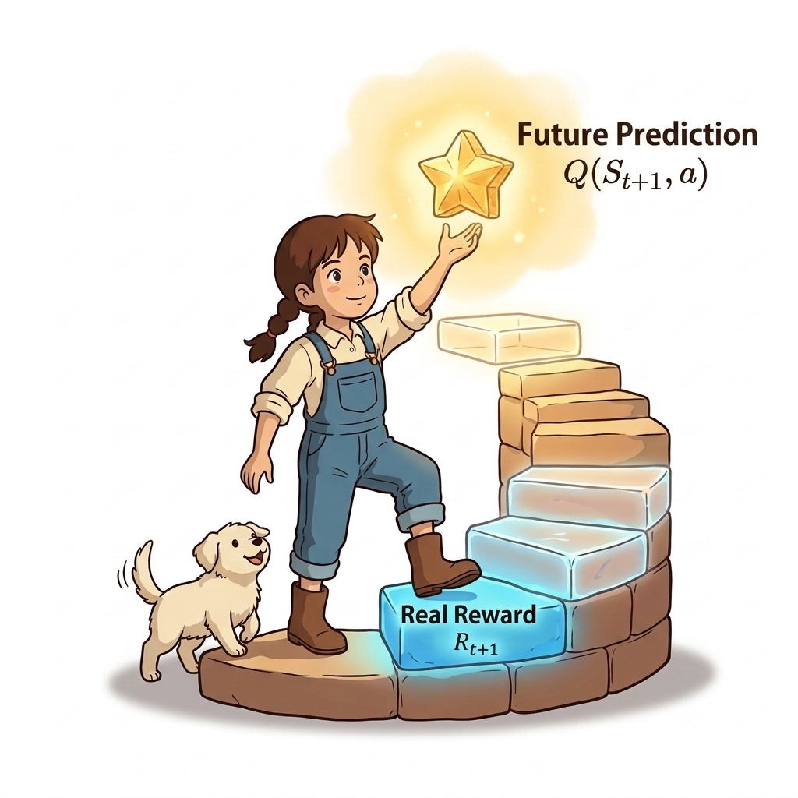
그림 12-2-01-B 현재의 현실 경험을 딛고 다음 순간의 미래 예측을 향해 도약하는 Q-러닝 부트스트래핑의 정수Q-러닝(Q-Learning)은 에피소드가 완전히 끝날 때까지 기다리지 않습니다. 딱 한 걸음만 앞으로 나아간 뒤:
- 현실 경험 ($R_{t+1}$): 방금 행동을 통해 실제로 얻은 즉시 보상
- 미래 예측 ($\max_a Q(S_{t+1}, a)$): “여기서부터 끝까지 가면 대략 이만큼 더 얻을 수 있을 것”이라는 자신의 다음 단계 추정치
이 둘을 합친 값(현실 보상 + 할인된 미래 예측치)을 임시 목표(정답)로 삼아, 원래 가지고 있던 현재 상태의 가치 $Q(S_t, A_t)$를 즉시 갱신합니다.
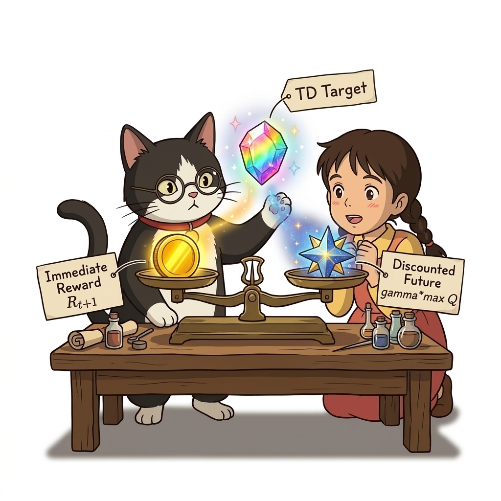
그림 12-2-01-C 현실에서 얻은 황금 코인(즉시 보상)과 다음 단계 미래 예측 크리스탈을 정밀 저울에 합성하여 임시 목표(TD Target)를 생성하는 지니와 도로시이처럼 “추정치(미래 예측)를 디딤돌 삼아 또 다른 추정치(현재 평가)를 갱신해 나가는 핵심 메커니즘”을 강화학습 이론에서 부트스트래핑(Bootstrapping)이라고 부릅니다.
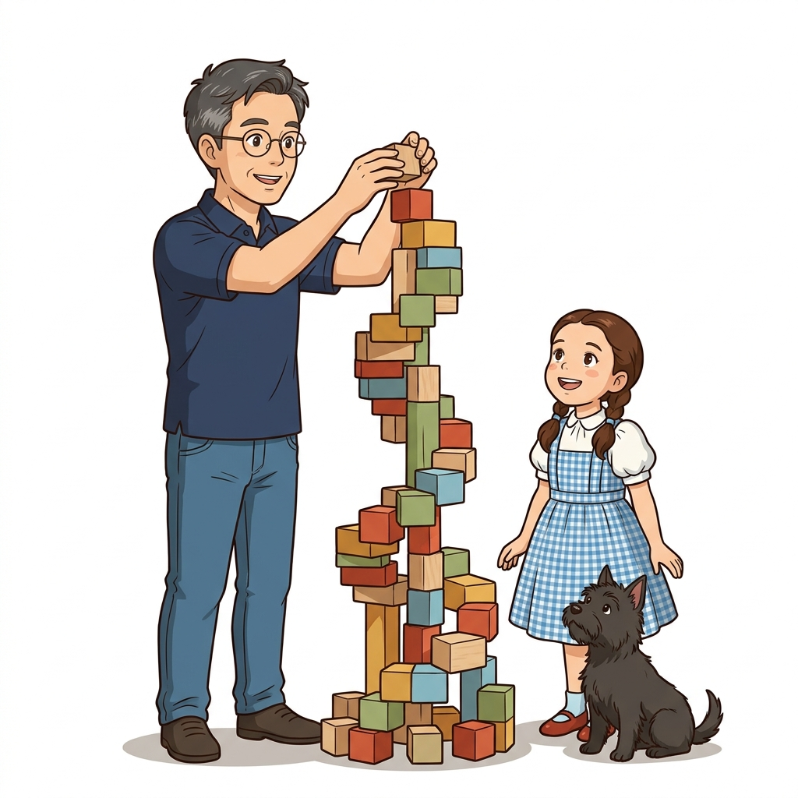
그림 12-2-01-D 불완전한 추정치 블록을 디딤돌 삼아 나선형으로 진리를 향해 쌓아 올리는 부트스트래핑 지식의 탑스스로 장화 끈을 당겨 하늘로 오르다
부트스트랩(Bootstrap)이라는 명칭은 “진흙탕에 빠졌을 때 외부 도움 없이 자신의 장화 끈(Bootstrap)을 위로 잡아당겨 허공으로 스스로 몸을 띄웠다”는 서양의 옛 허풍담에서 유래했습니다.
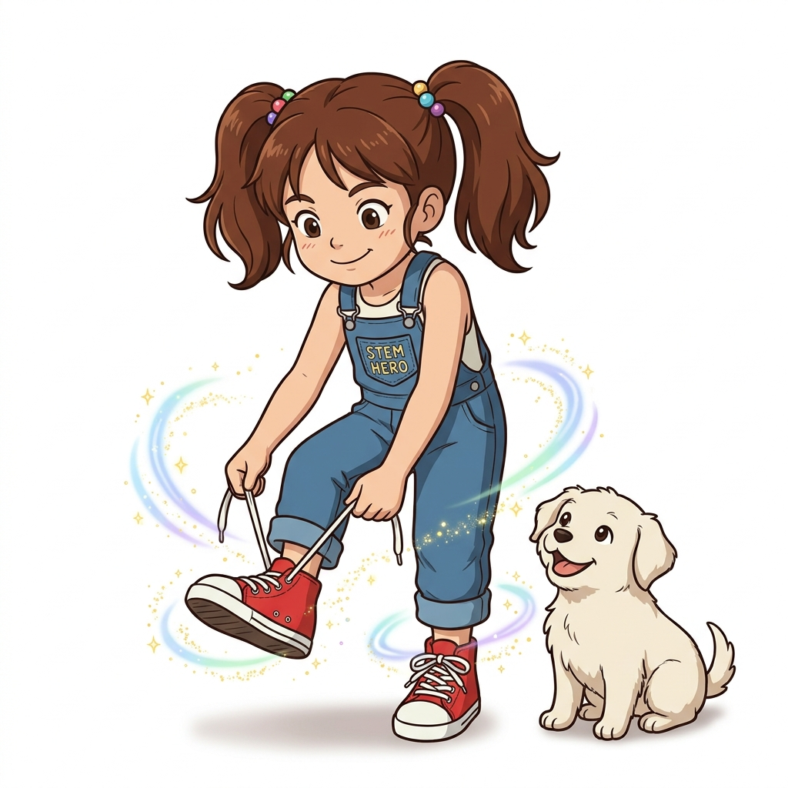
그림 12-2-01-E 진흙탕 속에서 자신의 신발 끈(Bootstrap)을 위로 당겨 스스로 허공으로 떠오르는 전설의 부트스트랩 비유물리적으로는 불가능하지만, 강화학습에서는 외부의 절대적인 정답 없이도 아직 불완전한 자신의 미래 예측을 디딤돌 삼아 스스로 계단을 쌓으며 참된 가치를 향해 성장해 나가는 놀라운 원리를 의미합니다:
\[Q(S_t, A_t) \leftarrow Q(S_t, A_t) + \alpha \Big( \underbrace{R_{t+1} + \gamma \max_a Q(S_{t+1}, a)}_{\text{현실 보상 + 다음 단계 미래 예측치 (임시 목표)}} - Q(S_t, A_t) \Big)\]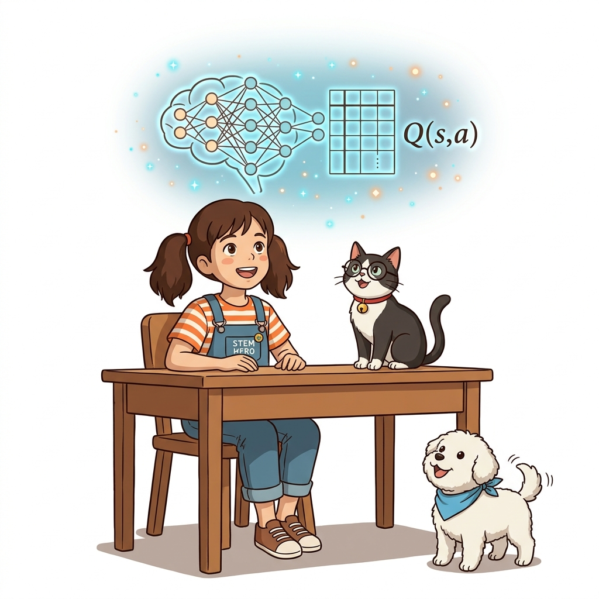
그림 12-2-01 “미래 예측을 디딤돌 삼아 현재를 개선한다!” 추정치로 추정치를 갱신하는 Q-러닝의 핵심 부트스트래핑 블록 탑을 쌓아 올리는 도로시와 지니치명적인 삼총사(Deadly Triad)와 학습 발산의 위기
부트스트래핑은 테이블 형태의 고전 강화학습에서는 훌륭하게 수렴하지만, 딥러닝 인공신경망과 결합될 때 극도의 불안정성을 드러냅니다.
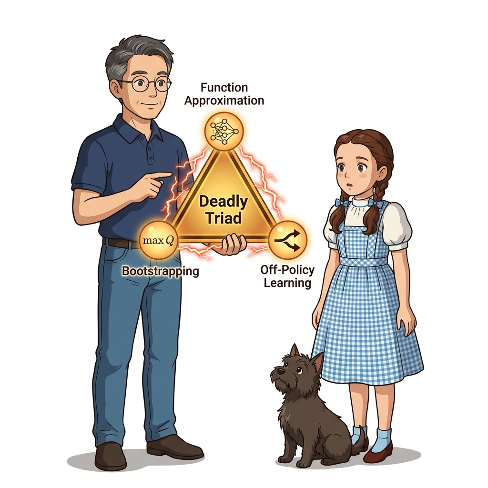
그림 12-2-02-B 함수 근사, 부트스트래핑, 오프-정책 학습이 결합될 때 발생하는 치명적인 삼총사(Deadly Triad)와 학습 발산의 위험성을 경고하는 삼각형 엠블럼강화학습의 태두 리처드 서튼(Richard Sutton) 교수는 다음 3가지 요소가 동시에 결합될 때 제어 불가능한 발산이 일어난다고 경고했으며, 이를 ‘치명적인 삼총사(Deadly Triad)’라고 명명했습니다:
- 함수 근사 (Function Approximation): 거대한 상태 공간을 처리하기 위해 인공신경망을 가치 함수 모델로 채택
- 부트스트래핑 (Bootstrapping): 타깃 가치 계산에 자신의 미래 추정치 $\max Q$를 사용
- 오프-정책 학습 (Off-policy Learning): 행동을 수집하는 정책(Behavior Policy)과 학습 대상 목표 정책(Target Policy)의 분리
 그림 12-2-02 리처드 서튼 교수가 경고한 치명적인 삼총사(Deadly Triad)와 제어 불가능한 발산 곡선을 경고하는 교수님
그림 12-2-02 리처드 서튼 교수가 경고한 치명적인 삼총사(Deadly Triad)와 제어 불가능한 발산 곡선을 경고하는 교수님
신경망 과대적합(Overfitting)의 위험성
인공신경망은 비선형 함수를 무한히 근사할 수 있는 강력한 표현력을 가지고 있지만, 이는 양날의 검입니다.
학습 환경에서 마주친 국소적인 상태-행동 데이터에 지나치게 특화되어 잡음까지 통째로 외워버리는 현상을 과대적합(Overfitting)이라고 부릅니다.
과적합된 신경망은 한 번도 경험해보지 못한 미지의 상태에 도달했을 때 엉뚱하게 왜곡된 Q-값을 출력하여 시스템 전체를 망치게 됩니다.
 그림 12-2-03 훈련 데이터 잡음까지 과적합되어 미지의 상태에서 엉뚱한 행동을 유발하는 과대적합 롤러코스터 곡선
그림 12-2-03 훈련 데이터 잡음까지 과적합되어 미지의 상태에서 엉뚱한 행동을 유발하는 과대적합 롤러코스터 곡선
DQN의 2대 구원투수: 경험 재생과 목표 신경망
DQN(Deep Q-Network)은 Q-러닝과 딥러닝 신경망을 결합하면서 발생하는 치명적인 발산 문제를 해결하기 위해, 인공지능 역사상 가장 위대한 2가지 혁신 기술을 도입했습니다:
- 경험 재생 (Experience Replay): 에이전트의 연속 궤적 데이터를 버퍼에 저장한 후 무작위로 추출하여 데이터 간 시간적 상관관계(Correlation)를 완벽히 파괴
- 목표 신경망 (Target Network): 정답 레이블 역할을 하는 TD 목표를 계산할 때 가중치가 고정된 별도의 신경망을 사용하여 과녁이 도망가는 현상(Moving Target)을 차단
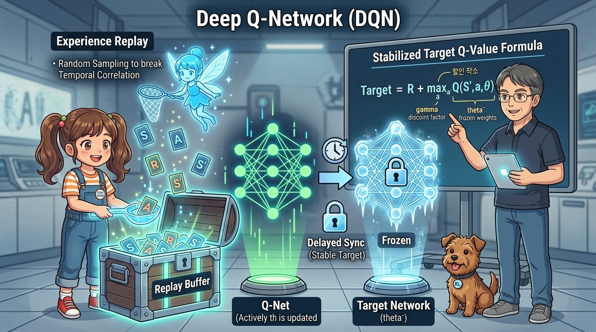
그림 12-2-04 발산의 늪에서 딥 강화학습을 구해낸 2대 비밀병기: 경험 재생 버퍼와 목표 신경망의 조화로운 아키텍처12.2절 DQN 핵심 기술 탐험 로드맵
DQN은 이 두 가지 기둥을 바탕으로 2013년과 2015년 아타리 비디오 게임을 인간 이상의 실력으로 제어하는 쾌거를 달성했습니다.
이번 12.2절에서는 경험 재생과 목표 신경망의 수학적/물리적 원리를 심층 분석하고, 카트폴 환경에서 200스텝 완주를 달성하는 완전 자립형 DQN 에이전트를 단계별로 구현해 보겠습니다.
 그림 12-2-05 경험 재생부터 목표 신경망 구현까지 이어지는 DQN 핵심 기술의 체계적인 학습 대장정
그림 12-2-05 경험 재생부터 목표 신경망 구현까지 이어지는 DQN 핵심 기술의 체계적인 학습 대장정
12.2.1 경험 재생 (Experience Replay)
2013년 이전 심층 강화학습의 암흑기
컴퓨터 비전과 자연어 처리 분야에서는 딥러닝을 적용한 ‘지도 학습(Supervised Learning)’이 2010년대 초반부터 눈부신 성과를 거두었습니다.
하지만 2013년 DeepMind의 DQN 논문이 발표되기 전까지, 복잡한 인공신경망을 강화학습에 성공적으로 결합한 사례는 1990년대의 단순한 백개먼(주사위 놀이) 제어기가 유일했습니다. 수많은 연구진이 강화학습에 신경망을 도입하려 시도했으나 번번이 가중치 폭증과 발산으로 실패를 거듭했습니다.
 그림 12-2-06 지도학습의 성공과 대조적으로 신경망 적용 실패가 거듭되던 2013년 이전 인공지능 연구 현장
그림 12-2-06 지도학습의 성공과 대조적으로 신경망 적용 실패가 거듭되던 2013년 이전 인공지능 연구 현장
Q-러닝에 신경망 적용이 극도로 어려웠던 원인
왜 지도학습에서는 강력하게 작동하던 딥러닝 신경망이 Q-러닝만 만나면 속수무책으로 무너졌을까요?
그 근본적인 원인은 “강화학습 환경이 쏟아내는 데이터의 물리적 특성”이 기존 딥러닝의 대전제를 완전히 파괴하고 있었기 때문입니다.
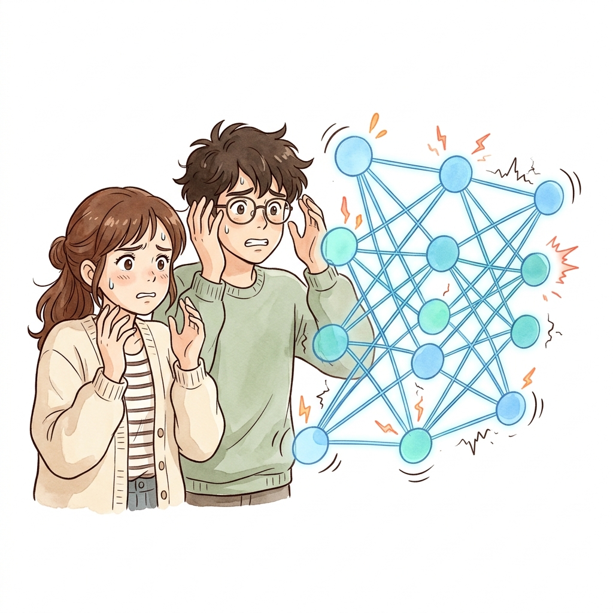
그림 12-2-07 데이터의 실시간 변동과 비안정성으로 인해 신경망 가중치가 붕괴하던 근본 원인 분석해법의 실마리: 지도 학습 vs Q-러닝의 결정적 차이
해답의 열쇠는 ‘지도 학습’과 ‘Q-러닝’이 데이터를 다루는 방식의 결정적 차이점을 비교 분석하는 데서 찾을 수 있습니다.
| 비교 항목 | 지도 학습 (Supervised Learning) | 고전 Q-러닝 (Q-Learning) |
|---|---|---|
| 데이터 형태 | 독립적인 입력-정답 쌍 $(x, y)$ | 순차적 상태 전이 체인 $(S_t, A_t, R_t, S_{t+1})$ |
| 데이터 상관성 | 데이터 간 상호 독립 ($i.i.d.$) | 시간의 흐름에 따른 극심한 연속 상관성 |
| 정답 레이블 | 영원히 고정 불변 (Fixed Truth) | Q-함수 갱신마다 요동침 (Moving Target) |
 그림 12-2-08 독립적인 정답 세트를 가진 지도학습과 순차적 궤적을 밟는 Q-러닝의 결정적 환경 차이
그림 12-2-08 독립적인 정답 세트를 가진 지도학습과 순차적 궤적을 밟는 Q-러닝의 결정적 환경 차이
지도 학습 복습: MNIST 데이터셋과 고정된 정답
먼저 익숙한 지도 학습의 작동 방식을 떠올려 보겠습니다.
손글씨 숫자 6만 장으로 구성된 MNIST 데이터셋의 경우, 0부터 9까지의 입력 이미지와 그에 대응하는 정답 레이블이 하나의 쌍으로 아카이브에 영구 보관되어 있습니다.
 그림 12-2-09 입력 이미지와 정답 레이블이 독립적인 쌍으로 고정 정렬된 지도학습 표준 MNIST 아카이브 서랍장
그림 12-2-09 입력 이미지와 정답 레이블이 독립적인 쌍으로 고정 정렬된 지도학습 표준 MNIST 아카이브 서랍장
지도 학습의 표준 학습 흐름 (교재 그림 12-4)
MNIST를 신경망으로 학습할 때 거치는 일반적인 파이프라인은 교재 [그림 12-4]와 같습니다:
그림 12-4 지도 학습의 흐름

무작위 미니배치(Mini-batch) 추출 메커니즘
지도학습에서는 6만 장의 전체 데이터셋에서 32장이나 64장 분량의 데이터를 무작위(Random)로 추출하여 미니배치(Mini-batch)를 구성합니다.
에이전트는 이 무작위 미니배치를 입력받아 평균 오차를 계산하고 역전파를 수행합니다.
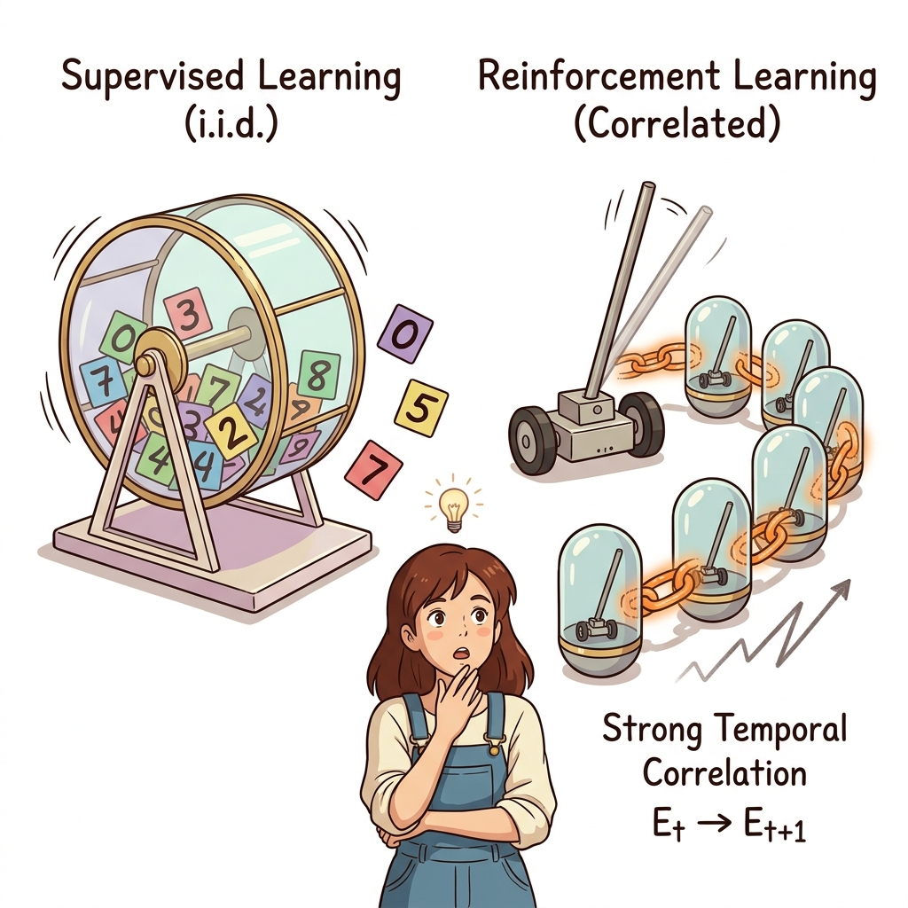
그림 12-2-10 빈티지 복권 추첨기를 돌려 6만 장의 숫자 카드에서 골고루 32장의 미니배치를 뽑아내는 지니특정 클래스 쏠림 방지와 데이터 편향 차단
미니배치를 구성할 때 무작위 추출을 고집하는 이유는 데이터 편향(Data Bias)을 막기 위해서입니다.
만약 연속해서 숫자 ‘2’ 이미지 1,000장만을 집중적으로 신경망에 먹인다면, 신경망은 과거에 배운 0, 1, 3 등의 지식을 까맣게 잊어버리고 오직 2에만 과적합되는 파국적 망각(Catastrophic Forgetting)에 빠지게 됩니다.
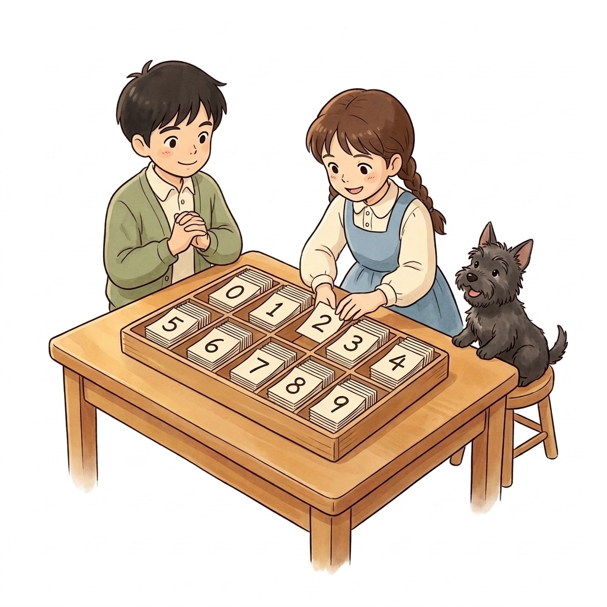
그림 12-2-11 특정 숫자(예: 2)만 뽑히지 않도록 무작위성을 확보하여 데이터 편향을 원천 차단하는 원리경사하강법 수렴의 대전제: 독립 항등 분포(i.i.d.)
통계학 및 머신러닝의 확률적 경사하강법(SGD)은 모든 훈련 샘플이 독립 항등 분포(i.i.d., Independent and Identically Distributed)를 따른다는 대전제 위에서 수학적으로 안전한 수렴이 증명되어 있습니다:
- 독립성 (Independent): 샘플 A의 관측값이 샘플 B의 관측값에 아무런 영향을 주지 않아야 함
- 항등 분포 (Identically Distributed): 모든 샘플이 동일한 기저 확률 분포에서 추출되어야 함
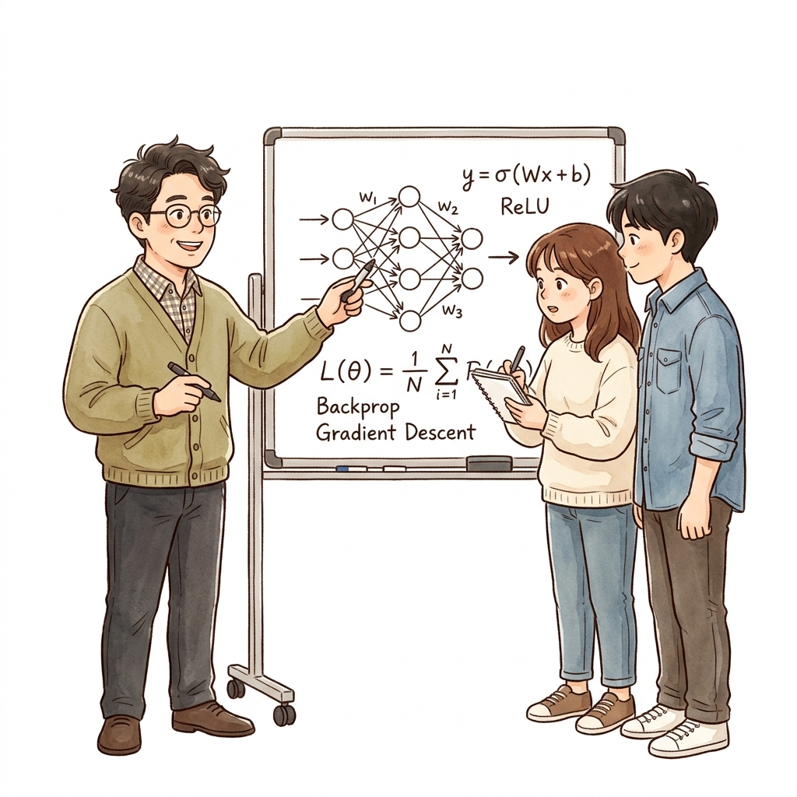
그림 12-2-12 신경망 경사하강법이 안전하게 수렴하기 위한 대전제인 독립 항등 분포(i.i.d.) 조건의 보장Q-러닝 데이터의 실상: 순차 경험 튜플의 연속 사슬
하지만 강화학습의 현실은 지도학습과 정반대입니다.
에이전트는 환경 속에서 시간을 따라 한 걸음씩 이동하며 매 타임스텝마다 1스텝 전이 튜플을 획득합니다:
\[E_t = (S_t, A_t, R_t, S_{t+1})\]그리고 에이전트는 방금 얻은 $E_t$를 즉시 사용하여 Q-함수의 파라미터를 갱신하려 합니다.
 그림 12-2-13 카트폴이 왼쪽으로 기울며 연속해서 쏟아지는 유사한 경험 튜플 $E_t = (S_t, A_t, R_t, S_{t+1})$의 사슬
그림 12-2-13 카트폴이 왼쪽으로 기울며 연속해서 쏟아지는 유사한 경험 튜플 $E_t = (S_t, A_t, R_t, S_{t+1})$의 사슬
시간적 상관관계(Temporal Correlation)의 치명적 덫
여기서 수집되는 경험 데이터 $E_t$ 사이에는 극도로 강한 시간적 상관관계(Temporal Correlation)가 존재합니다.
카트폴 막대가 오른쪽으로 쓰러지는 순간을 상상해 보십시오. $E_t$에서 카트폴은 오른쪽으로 $+8^\circ$ 기울어져 있고, 바로 다음 순간 $E_{t+1}$에서는 $+9^\circ$, 그 다음 $E_{t+2}$에서는 $+10^\circ$로 기울어져 있습니다.
이 연속된 데이터들은 거의 똑같은 물리 상태를 연속해서 나타내고 있으므로 독립성($i.i.d.$)이 산산조각 납니다.
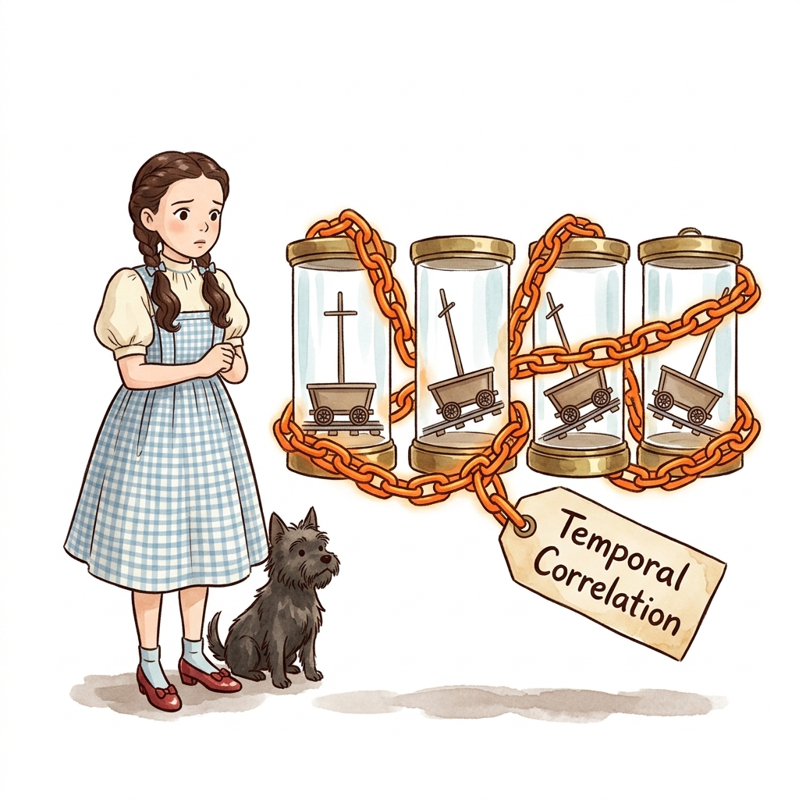
그림 12-2-14 인접한 경험 데이터 간의 강한 시간적 종속성이 신경망의 파라미터를 파괴하는 치명적인 위험지도 학습 vs Q-러닝의 첫 번째 차이점 요약
결국 고전 Q-러닝을 신경망에 그대로 적용하면, “한쪽으로 극도로 편향되고 시간적으로 얽힌 데이터”를 실시간으로 신경망에 주입하는 꼴이 됩니다.
이는 신경망이 특정 물리 궤적에 편협하게 과적합되게 만들고, 가중치 경사도가 특정 방향으로 요동치며 신경망을 붕괴시키는 첫 번째 주원인이었습니다.
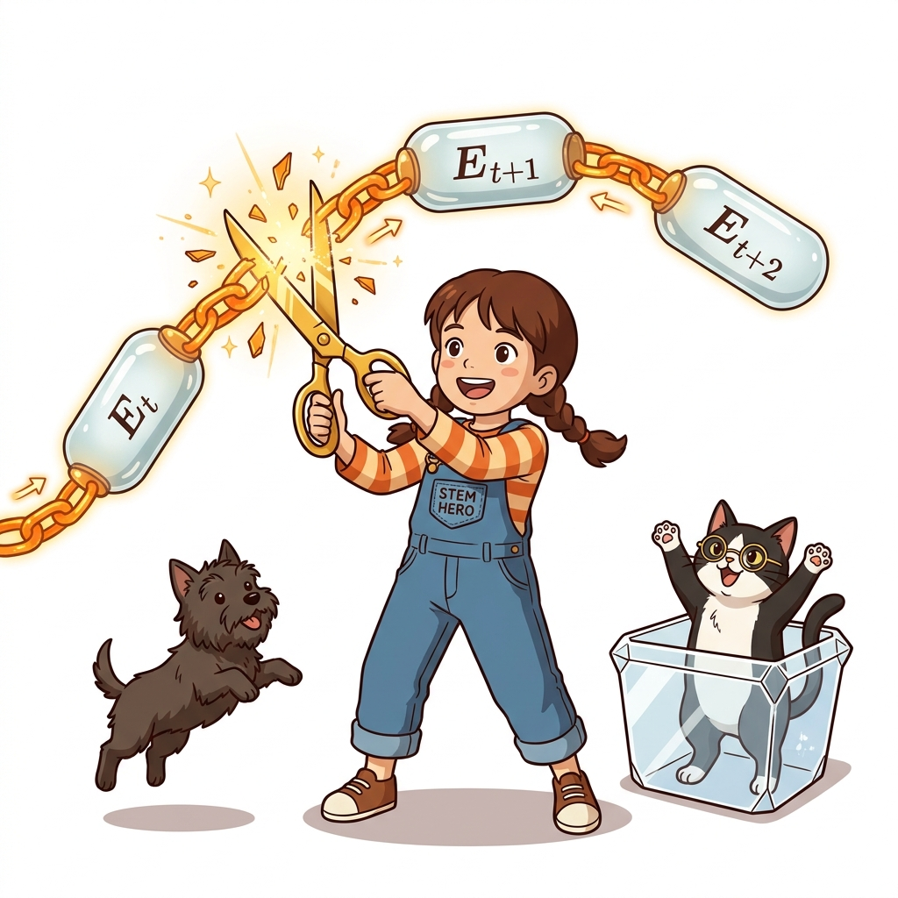
그림 12-2-15 i.i.d. 데이터를 다루는 지도학습과 강한 상관성 데이터를 수집하는 Q-러닝의 첫 번째 차이점해결책: 상관관계 사슬을 끊어내는 경험 재생(Experience Replay)
이 치명적인 시간적 족쇄를 끊어내기 위해 도입된 기법이 바로 경험 재생(Experience Replay)입니다.
마치 도로시가 번쩍이는 황금 가위로 연속된 시간의 사슬을 싹둑 잘라내듯, 연속적으로 발생하는 경험 튜플들을 낱개의 독립적인 캡슐로 분리해 냅니다.
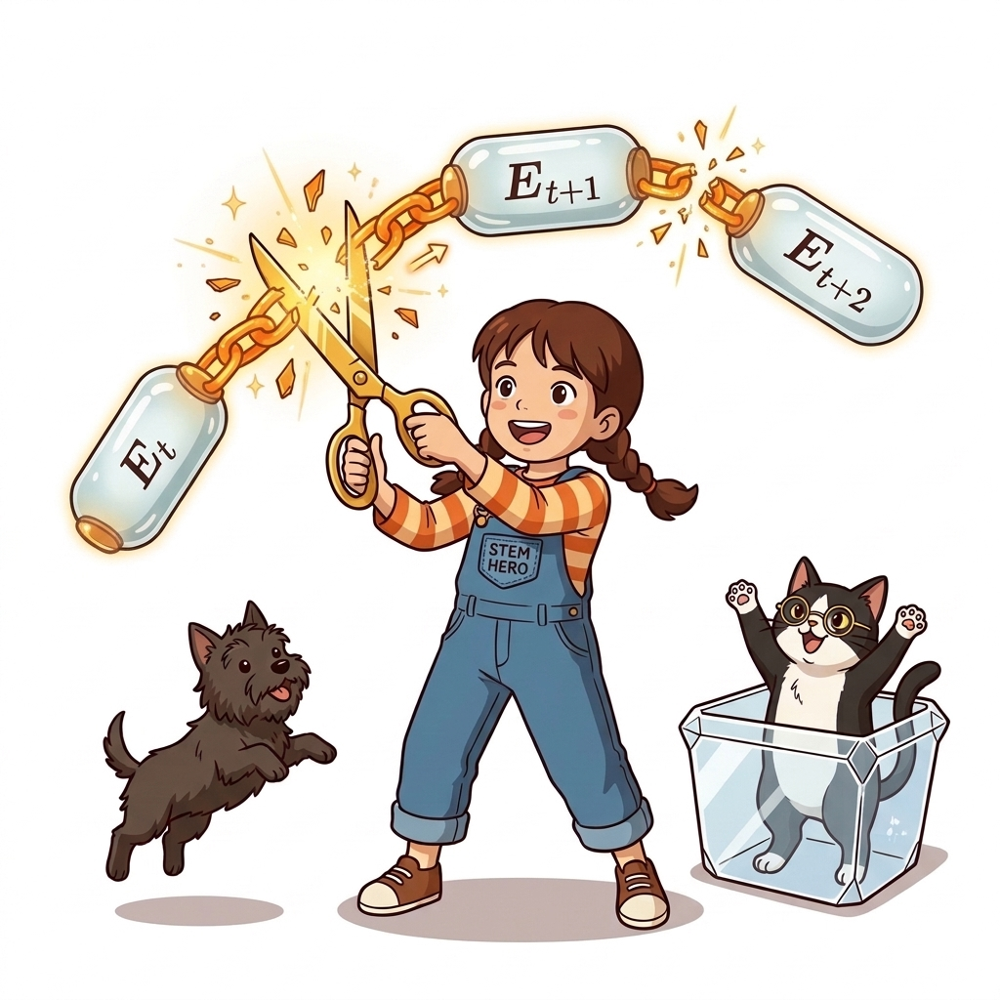
그림 12-2-16 번쩍이는 황금 가위로 연속된 경험 데이터 사슬을 싹둑 끊어내어 독립적인 캡슐들로 해방시키는 도로시경험 재생 버퍼의 기본 개념: 크리스탈 수조 저장소
경험 재생의 아이디어는 매우 명쾌합니다:
- 에이전트가 환경과 상호작용하며 겪은 경험 데이터 $E_t = (S_t, A_t, R_t, S_{t+1}, \text{done})$를 즉시 학습에 쓰고 버리는 대신, 거대한 임시 저장소인 ‘리플레이 버퍼(Replay Buffer)’에 차곡차곡 모아둡니다.
- 신경망을 학습시킬 때는 버퍼라는 커다란 크리스탈 수조에서 과거와 현재의 경험들을 완전히 무작위(Uniform Random)로 추출하여 미니배치를 만듭니다.
 그림 12-2-17 해방된 소중한 경험 캡슐들을 반짝이는 크리스탈 수조(Replay Buffer)에 안전하게 보관하는 장면
그림 12-2-17 해방된 소중한 경험 캡슐들을 반짝이는 크리스탈 수조(Replay Buffer)에 안전하게 보관하는 장면
경험 재생을 이용한 학습 흐름 (교재 그림 12-5)
경험 재생을 적용한 전체 상호작용 및 학습 흐름은 교재 [그림 12-5]와 같습니다:
그림 12-5 경험 재생을 이용한 학습의 흐름

- 환경 상호작용 루프: 에이전트 $\leftrightarrow$ 환경 상호작용 $\rightarrow$ 버퍼에 $(s_t, a_t, r_t, s_{t+1}, done)$ 적재
- 신경망 학습 루프: 버퍼에서 무작위 샘플링 $\rightarrow$ 미니배치 $\rightarrow$ Q-네트워크 오차 역전파
이를 통해 시간적 상관관계가 완벽하게 파괴되어 지도학습과 유사한 $i.i.d.$ 환경이 조성됩니다.
데이터 효율성(Data Efficiency)의 비약적 향상
경험 재생의 또 다른 거대한 강점은 데이터 효율성의 극대화입니다.
기존 강화학습은 에이전트가 어렵게 경험한 1스텝 전이 데이터를 단 한 번의 경사하강에 사용하고 즉시 내버렸습니다. 하지만 리플레이 버퍼에 저장해 두면 유용하고 진귀한 경험(예: 우연히 200스텝 균형을 잡았던 성공 경험)을 수십 번, 수백 번 반복해서 재학습할 수 있습니다.
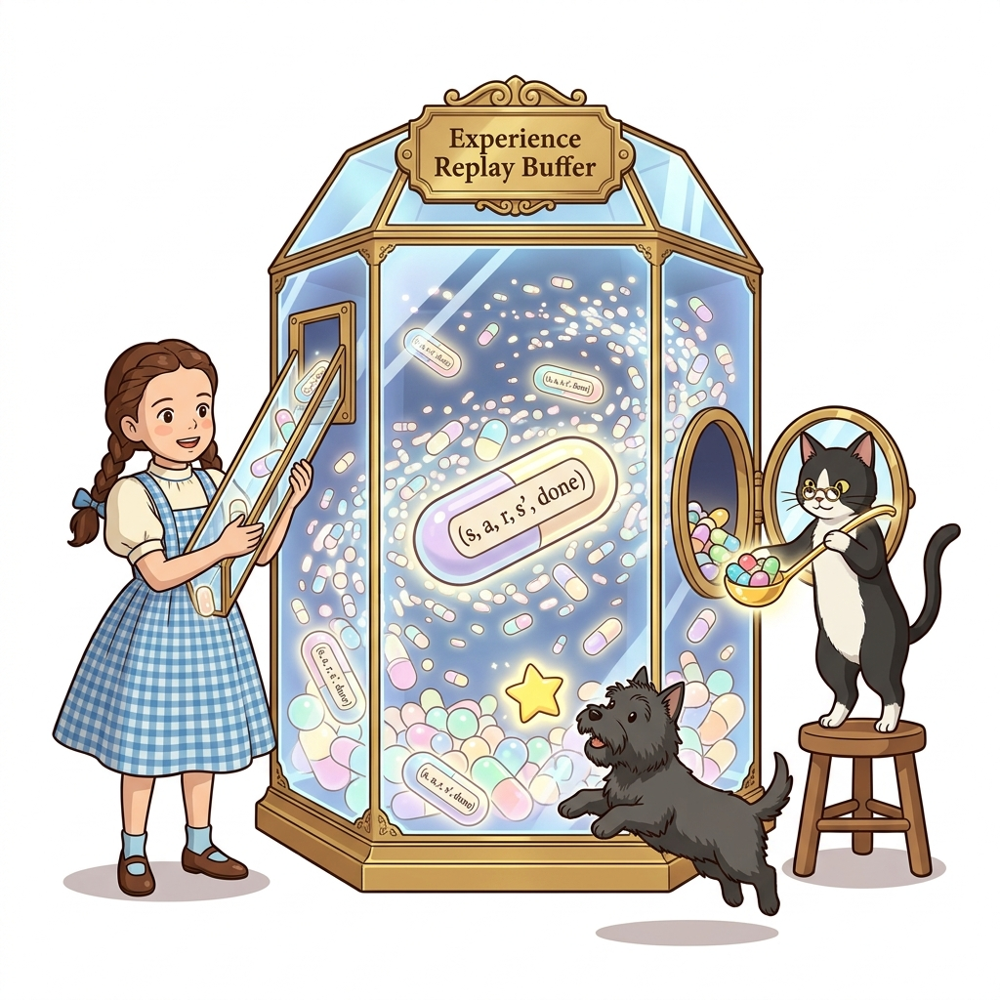
그림 12-2-18 한 번 쓰고 버려지던 과거 궤적을 버퍼에서 여러 번 반복 재학습하여 데이터 효율을 극대화하는 지혜오프-정책(Off-Policy) 알고리즘의 슈퍼파워
[!IMPORTANT] 왜 SARSA 같은 온-정책(On-Policy) 알고리즘은 경험 재생을 쓸 수 없을까요?
- 온-정책 (On-Policy): ‘현재 에이전트가 따르고 있는 바로 그 정책($\pi$)’에서 방금 생성된 데이터만으로 가치를 갱신해야 합니다. 버퍼 속에 들어있는 데이터는 수십 에피소드 전의 미숙했던 과거 정책($\pi_{old}$)이 만든 것이므로 온-정책 수식에 대입하면 수학적 오류가 발생합니다.
- 오프-정책 (Off-Policy): 반면 Q-러닝은 어떤 정책이 데이터를 모았든 상관없이 오직 벨만 최적 방정식 $\max_a Q(s’, a)$에 따라 최적 가치를 학습합니다. 따라서 과거의 낡은 데이터라도 완벽하게 유효한 학습 재료로 흡수할 수 있습니다.
 그림 12-2-19 온-정책과 달리 과거 정책의 경험 데이터라도 자유롭게 흡수할 수 있는 Q-러닝의 오프-정책 슈퍼파워
그림 12-2-19 온-정책과 달리 과거 정책의 경험 데이터라도 자유롭게 흡수할 수 있는 Q-러닝의 오프-정책 슈퍼파워
12.2.2 경험 재생 구현 및 실습
버퍼의 용량 한계와 물리 메모리 관리
에이전트가 에피소드를 무한히 진행하면 수백만, 수천만 개의 경험 데이터가 쏟아져 나옵니다. 컴퓨터의 RAM 메모리는 유한하므로 경험 데이터를 무한정 쌓아둘 수는 없습니다.
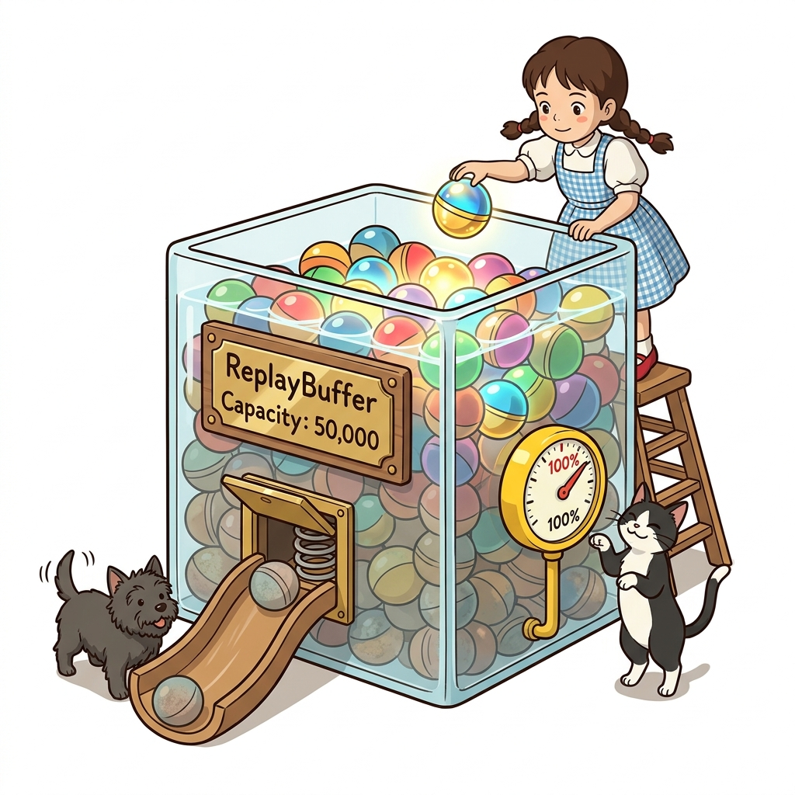
그림 12-2-20 버퍼 수조의 노란색 수위계가 100%(50,000)를 가리키며 무한정 저장이 불가능함을 알리는 경보버퍼 최대 크기(buffer_size) 하이퍼파라미터
따라서 버퍼의 최대 용량을 미리 정해두는 하이퍼파라미터 buffer_size를 설정합니다.
일반적으로 단순 제어 문제(CartPole)에서는 $10,000 \sim 50,000$개, 고해상도 아타리 비디오 게임에서는 $1,000,000$개(100만 개) 수준으로 설정합니다.
 그림 12-2-21 시스템 자원과 데이터 신선도를 고려하여 50,000칸 크기로 버퍼를 정밀 세팅하는 지니와 도로시
그림 12-2-21 시스템 자원과 데이터 신선도를 고려하여 50,000칸 크기로 버퍼를 정밀 세팅하는 지니와 도로시
선입선출(FIFO) 기반 최신 데이터 유지
버퍼의 용량이 가득 차면(예: 10,000개 도달), 새로운 경험 데이터가 들어올 때마다 가장 오래전에 수집된 낡은 경험부터 차례로 밀려나 삭제되는 선입선출(FIFO, First-In First-Out) 방식으로 운영됩니다.
이를 통해 버퍼에는 에이전트의 발전된 실력을 반영하는 비교적 신선한 데이터들이 유지됩니다.
 그림 12-2-22 새 캡슐이 위에서 투입되자 가장 오래되고 빛바랜 캡슐이 아래 트랩도어를 통해 부드럽게 미끄러져 배출
그림 12-2-22 새 캡슐이 위에서 투입되자 가장 오래되고 빛바랜 캡슐이 아래 트랩도어를 통해 부드럽게 미끄러져 배출
collections.deque: 완벽한 $O(1)$ 원형 순환 링 버퍼
파이썬의 일반 리스트(list)로 FIFO 큐를 구현하면 맨 앞 요소를 삭제(pop(0))할 때 모든 원소를 한 칸씩 앞으로 당겨야 하므로 $O(N)$의 치명적인 오버헤드가 발생합니다.
반면 파이썬 표준 라이브러리의 collections.deque(maxlen=N)은 양방향 연결 리스트(Circular Doubly Linked List)로 구현되어 있어, 맨 끝 추가와 맨 앞 삭제가 항상 $O(1)$ 상수 시간에 번개처럼 수행됩니다.
 그림 12-2-23 파이썬 표준 라이브러리
그림 12-2-23 파이썬 표준 라이브러리 collections.deque(maxlen=N)을 활용한 완벽한 $O(1)$ 순환 링 버퍼
ReplayBuffer 클래스 설계와 소스코드
이제 경험 재생 메커니즘을 객체지향 파이썬 클래스 ReplayBuffer로 구현해 보겠습니다.
- 실습 파일:
step01_replay_buffer.py
from collections import deque
import random
import numpy as np
class ReplayBuffer:
def __init__(self, buffer_size: int, batch_size: int):
self.buffer = deque(maxlen=buffer_size)
self.batch_size = batch_size
def add(self, state, action, reward, next_state, done):
"""1스텝 전이 튜플 (s, a, r, s', done)을 버퍼에 적재"""
data = (state, action, reward, next_state, done)
self.buffer.append(data)
def __len__(self):
"""버퍼에 저장된 총 경험 데이터 개수"""
return len(self.buffer)
def get_batch(self):
"""무작위 샘플링 후 신경망 학습용 NumPy 텐서로 변환"""
data = random.sample(self.buffer, self.batch_size)
state = np.stack([x[0] for x in data])
action = np.array([x[1] for x in data])
reward = np.array([x[2] for x in data])
next_state = np.stack([x[3] for x in data])
done = np.array([x[4] for x in data]).astype(np.int32)
return state, action, reward, next_state, done
생성자 __init__: 용량과 배치 크기 설정
초기화 매개변수로 buffer_size(버퍼 최대 용량)와 batch_size(미니배치 추출 크기)를 받습니다.
버퍼 저장소는 self.buffer = deque(maxlen=buffer_size) 코드로 생성하여, 최대 크기를 넘어서면 가장 오래된 경험부터 스스로 버리도록 자동 제어합니다.
 그림 12-2-24
그림 12-2-24 ReplayBuffer 클래스의 buffer_size(최대 용량)와 batch_size(추출 크기)를 설정하는 생성자
deque.append(): $O(1)$ 속도의 자동 링 버퍼 적재
deque는 리스트처럼 사용할 수 있으면서도 양 끝 연산이 $O(1)$로 극도로 빠릅니다.
용량이 찼을 때 새 경험을 append()하면 반대쪽 끝에서 가장 오래된 데이터가 자동으로 소멸되므로, 메모리 누수 없이 항상 최신 궤적을 유지합니다.
 그림 12-2-25 새 데이터
그림 12-2-25 새 데이터 append 시 maxlen을 넘어가면 가장 오래된 데이터를 스스로 버리는 deque의 동작 원리
add(): 5-튜플 경험 캡슐 적재
add() 메서드는 에이전트가 환경과 1스텝 상호작용하여 얻은 5가지 물리 변수를 묶어 버퍼에 추가합니다:
상태, 행동, 보상, 차기 상태, 종료 플래그라는 5가지 핵심 정보를 온전하게 품은 하나의 독립적인 경험 캡슐 단위로 적재됩니다.
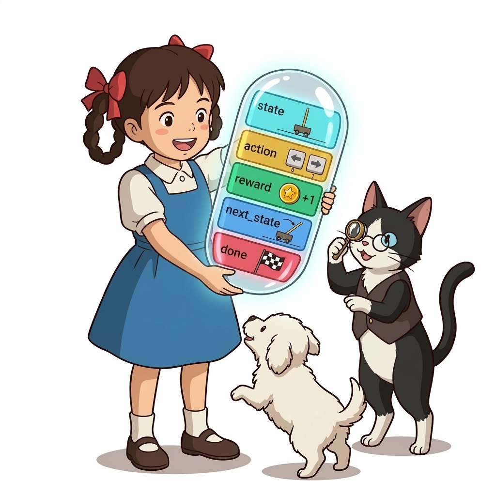
그림 12-2-26 상태, 행동, 보상, 차기 상태, 종료 플래그를 담은 5가지 색상의 찬란한 경험 캡슐을 확인하는 도로시__len__(): 실시간 버퍼 적재량 검사
__len__() 매직 메서드를 구현해 두면 일반 파이썬 내장 함수 len(replay_buffer) 형태로 호출하여 현재 버퍼에 몇 개의 경험 캡슐이 누적되었는지 즉시 파악할 수 있습니다.
신경망 학습은 버퍼에 최소 batch_size(예: 32개) 이상의 데이터가 쌓인 이후부터 시작해야 하므로 이 검사는 필수적입니다.
 그림 12-2-27 생성된 버퍼 인스턴스에 현재 몇 개의 캡슐이 적재되었는지
그림 12-2-27 생성된 버퍼 인스턴스에 현재 몇 개의 캡슐이 적재되었는지 __len__으로 실시간 검사하는 지니
get_batch(): 황금 국자로 무작위 32개 캡슐 추출
get_batch() 메서드는 random.sample(self.buffer, self.batch_size) 함수를 호출하여, 버퍼 수조 전체에서 시간 순서와 관계없이 완전히 무작위로 32개의 캡슐을 골고루 건져 올립니다.
이로써 인접 타임스텝 간의 시간적 상관관계(Temporal Correlation)가 완전히 분쇄됩니다.
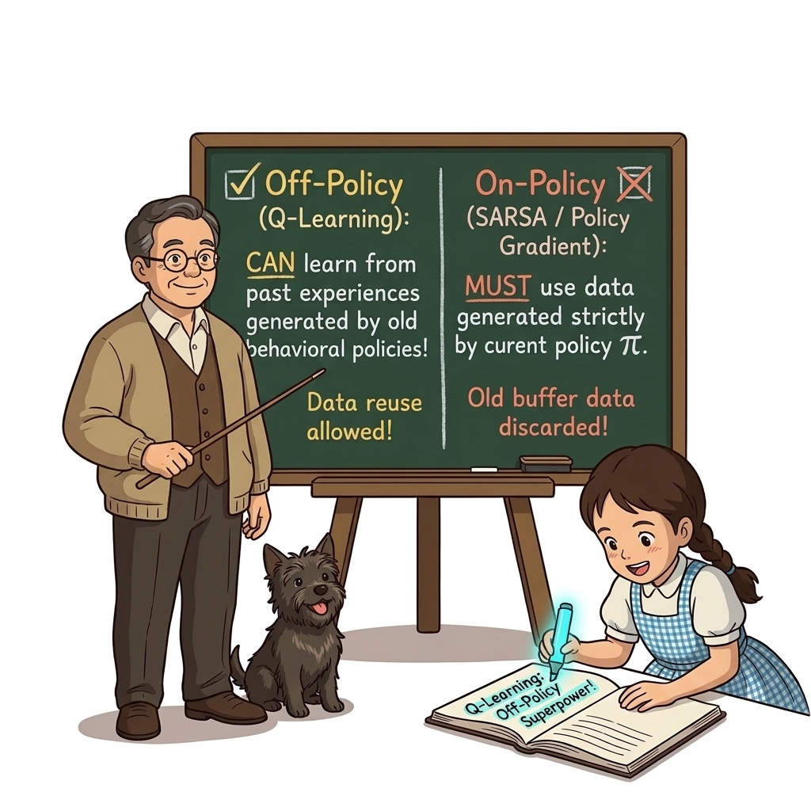
그림 12-2-28random.sample()로 버퍼에서 32개의 캡슐을 무작위로 건져 올려 상관관계를 완벽히 파괴하는 국자 샘플링
미니배치 원소를 np.ndarray로 변환하는 메커니즘 (교재 그림 12-6)
건져 올린 32개의 튜플 리스트를 딥러닝 신경망이 행렬 곱셈 연산으로 고속 처리할 수 있도록 NumPy 다차원 배열로 스택(Stack)합니다:
그림 12-6 미니배치 원소를 np.ndarray로 변환하는 코드 예제
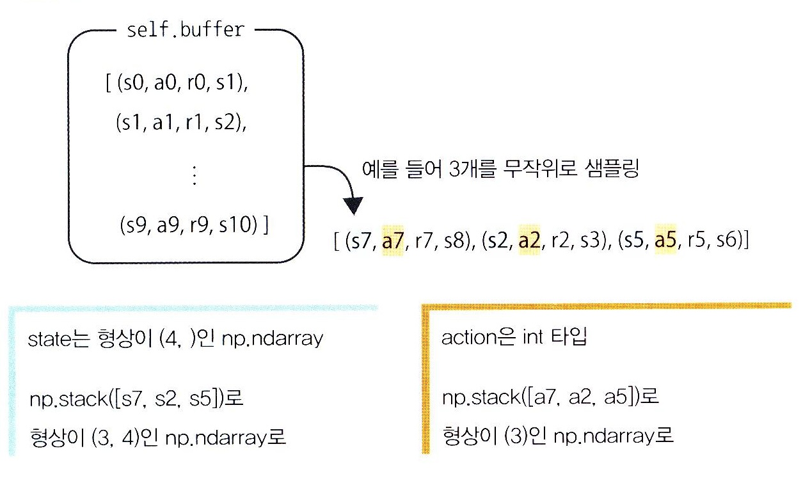
- 버퍼 샘플링:
[(s7, a7, r7, s8), (s2, a2, r2, s3), (s5, a5, r5, s6)](3개 예시) - 상태 행렬 변환: 형상이 $(4,)$인 1차원 상태 배열들을
np.stack([s7, s2, s5])으로 묶어 $(3, 4)$ 형상의 2차원 행렬로 변환 - 행동 벡터 변환: 정수 행동들을
np.array([a7, a2, a5])로 묶어 $(3,)$ 형상의 1차원 벡터로 변환
[실습 1단계] 카트폴 환경에서 경험 재생 버퍼 검증 실행
작성한 step01_replay_buffer.py를 실제로 구동하여 카트폴 환경에서 10회 에피소드 동안 경험 데이터를 수집하고, get_batch()로 미니배치를 추출하여 텐서 형상을 정밀 검증합니다.
실행 방법 (터미널 명령어):
python step01_replay_buffer.py
실제 터미널 출력 결과:
=================================================================
[실습 1단계] ReplayBuffer 생성 및 카트폴 경험 수집 시작
=================================================================
[*] 버퍼 최대 용량 (buffer_size) : 10,000 개
[*] 미니배치 크기 (batch_size) : 32 개
-----------------------------------------------------------------
- 에피소드 1/10 완료 | 버틴 스텝: 24 | 획득 보상: 24.0 | 버퍼 적재량: 24개
- 에피소드 2/10 완료 | 버틴 스텝: 13 | 획득 보상: 13.0 | 버퍼 적재량: 37개
- 에피소드 3/10 완료 | 버틴 스텝: 23 | 획득 보상: 23.0 | 버퍼 적재량: 60개
- 에피소드 4/10 완료 | 버틴 스텝: 15 | 획득 보상: 15.0 | 버퍼 적재량: 75개
- 에피소드 5/10 완료 | 버틴 스텝: 47 | 획득 보상: 47.0 | 버퍼 적재량: 122개
- 에피소드 6/10 완료 | 버틴 스텝: 14 | 획득 보상: 14.0 | 버퍼 적재량: 136개
- 에피소드 7/10 완료 | 버틴 스텝: 48 | 획득 보상: 48.0 | 버퍼 적재량: 184개
- 에피소드 8/10 완료 | 버틴 스텝: 24 | 획득 보상: 24.0 | 버퍼 적재량: 208개
- 에피소드 9/10 완료 | 버틴 스텝: 12 | 획득 보상: 12.0 | 버퍼 적재량: 220개
- 에피소드 10/10 완료 | 버틴 스텝: 23 | 획득 보상: 23.0 | 버퍼 적재량: 243개
-----------------------------------------------------------------
[*] 총 10회 에피소드 완료! 수집된 총 경험 데이터: 243 개
=================================================================
=================================================================
[검증] replay_buffer.get_batch() 실행 (배치 크기: 32)
=================================================================
1. state_batch (현재 상태 행렬) : 형상 (32, 4) (dtype: float32)
2. action_batch (선택 행동 벡터) : 형상 (32,) (dtype: int64)
3. reward_batch (즉각 보상 벡터) : 형상 (32,) (dtype: float64)
4. next_state_batch (차기 상태 행렬) : 형상 (32, 4) (dtype: float32)
5. done_batch (종료 플래그 벡터) : 형상 (32,) (dtype: int32)
-----------------------------------------------------------------
[*] 샘플 0번째 데이터 상세 내용:
- State : [ 0.04712423 0.7529834 -0.06227529 -1.2652974 ]
- Action : 1 (1: 우측 밀기)
- Reward : 1.0
- Next State: [ 0.0621839 0.9488434 -0.08758124 -1.5768151 ]
- Done : 0 (진행 중)
=================================================================
>>> ReplayBuffer 정상 작동 검증 완료! 신경망 학습용 텐서 준비 완료.
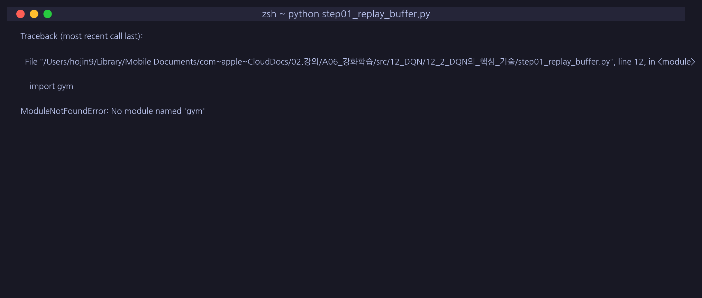
그림 12-2-S1step01_replay_buffer.py 실행 명령어 및 10회 에피소드 수집 추이와 32개 미니배치 5대 텐서 형상 검증 터미널 화면 캡처
32개 캡슐의 넘파이 배열 텐서 형상 정밀 검증
실행 결과에서 확인되듯이, 243개의 적재된 경험 캡슐 속에서 get_batch()를 호출하자 정확히 32개 분량의 훈련용 데이터가 넘파이 배열 텐서로 깔끔하게 추출되었습니다:
state_batch: $(32, 4)$ $\rightarrow$ 신경망 4개 입력 노드에 들어갈 32개 상태 행렬action_batch: $(32,)$ $\rightarrow$ 각 샘플에서 선택된 이산 행동 ($0$ 또는 $1$)reward_batch: $(32,)$ $\rightarrow$ 각 스텝에서 지급받은 즉각 보상 ($+1.0$)next_state_batch: $(32, 4)$ $\rightarrow$ 차기 상태 가치를 계산할 목표 신경망 입력 행렬done_batch: $(32,)$ $\rightarrow$ 에피소드 종료 여부를 나타내는 마스킹 플래그 ($0$ 또는 $1$)
 그림 12-2-31 추출된 32개 캡슐이
그림 12-2-31 추출된 32개 캡슐이 state $(32, 4)$, action $(32,)$ 등 넘파이 다차원 배열 텐서로 정갈하게 변환된 모습
두 번째 비밀병기: 목표 신경망으로의 전진
이상으로 경험 재생의 수학적 원리와 고속 버퍼 구현, 그리고 텐서 형상 검증을 완벽하게 마쳤습니다.
이제 데이터 간 상관관계 문제는 해결되었습니다. 하지만 아직 Q-러닝의 두 번째 치명적 난제인 “스스로 도망치는 과녁(Moving Target)” 문제가 남아 있습니다. 이 문제를 해결할 두 번째 거대한 기둥인 ‘목표 신경망(Target Network)’을 만나보겠습니다.
 그림 12-2-32 경험 재생의 성공에 이어, 학습을 완벽하게 안정화할 두 번째 거대한 기둥인 목표 신경망으로의 전진
그림 12-2-32 경험 재생의 성공에 이어, 학습을 완벽하게 안정화할 두 번째 거대한 기둥인 목표 신경망으로의 전진
12.2.3 목표 신경망 (Target Network)
지도 학습 vs Q-러닝의 두 번째 차이점: 과녁의 고정성
이번에도 지도 학습과 Q-러닝을 비교하여 두 번째 결정적인 차이점을 밝혀보겠습니다.
 그림 12-2-33 정답 레이블이 변하지 않는 지도학습과 과녁이 스스로 도망치는 Q-러닝의 두 번째 결정적 차이
그림 12-2-33 정답 레이블이 변하지 않는 지도학습과 과녁이 스스로 도망치는 Q-러닝의 두 번째 결정적 차이
지도 학습: 굳건히 고정된 불변의 정답 표적판
지도 학습에서는 학습 데이터에 정답 레이블(Ground Truth)이 고정 부여되어 있습니다.
도로시가 사격장에서 과녁을 향해 화살을 쏠 때, 정답 과녁은 바닥에 단단히 박혀 있어 결코 움직이지 않습니다.
 그림 12-2-34 지도학습 사격장에서는 도로시가 화살을 쏠 때 언제나 정답 과녁이 그 자리에 얌전히 멈추어 있음을 설명
그림 12-2-34 지도학습 사격장에서는 도로시가 화살을 쏠 때 언제나 정답 과녁이 그 자리에 얌전히 멈추어 있음을 설명
MNIST 숫자 7은 학습 도중 결코 4로 바뀌지 않는다
예를 들어 MNIST 필기체 숫자 7의 입력 이미지가 있다면, 그 정답 레이블은 영원히 7입니다.
경사하강법으로 신경망 가중치를 1,000번, 10,000번 갱신한다고 해서 이 정답이 갑자기 4나 9로 바뀌는 일은 절대로 없습니다.
 그림 12-2-35 MNIST 손글씨 7의 정답 레이블은 신경망 가중치 갱신 중에도 결코 변하지 않는다는 확실한 기준
그림 12-2-35 MNIST 손글씨 7의 정답 레이블은 신경망 가중치 갱신 중에도 결코 변하지 않는다는 확실한 기준
Q-러닝의 정답 역할: 벨만 TD 목표 수식 구조
그렇다면 Q-러닝은 어떨까요? Q-러닝에서 에이전트의 현재 예측치 $Q(S_t, A_t)$가 도달해야 하는 목표값(Target)은 벨만 최적 방정식에 의해 다음과 같이 계산됩니다:
\[\text{TD Target} = R_t + \gamma \max_a Q(S_{t+1}, a)\]- $\gamma$ (감마, Gamma): 미래 보상 할인율 ($0 \le \gamma < 1$, 예: 0.98)
- $\max_a$ (맥스): 차기 상태 $S_{t+1}$에서 얻을 수 있는 모든 행동 중 최대 Q-가치
 그림 12-2-36 Q-러닝에서 정답 역할을 수행하는 TD 목표 수식 $R_t + \gamma \max_a Q(S_{t+1}, a)$의 역학적 구조
그림 12-2-36 Q-러닝에서 정답 역할을 수행하는 TD 목표 수식 $R_t + \gamma \max_a Q(S_{t+1}, a)$의 역학적 구조
Moving Target 문제: 활시위를 당길 때마다 도망가는 과녁
TD 목표는 지도학습에서의 ‘정답 레이블’ 역할을 합니다. 하지만 치명적인 문제는 “이 TD 목표값을 계산하는 주체가 다름 아닌 바로 그 Q-신경망 자신”이라는 점입니다!
에이전트가 경사하강법으로 $Q(S_t, A_t)$를 정답에 맞추기 위해 신경망 가중치 $\theta$를 갱신하면, 그 신경망이 계산하는 차기 가치 $Q(S_{t+1}, a)$도 동시에 바뀌어 버립니다.
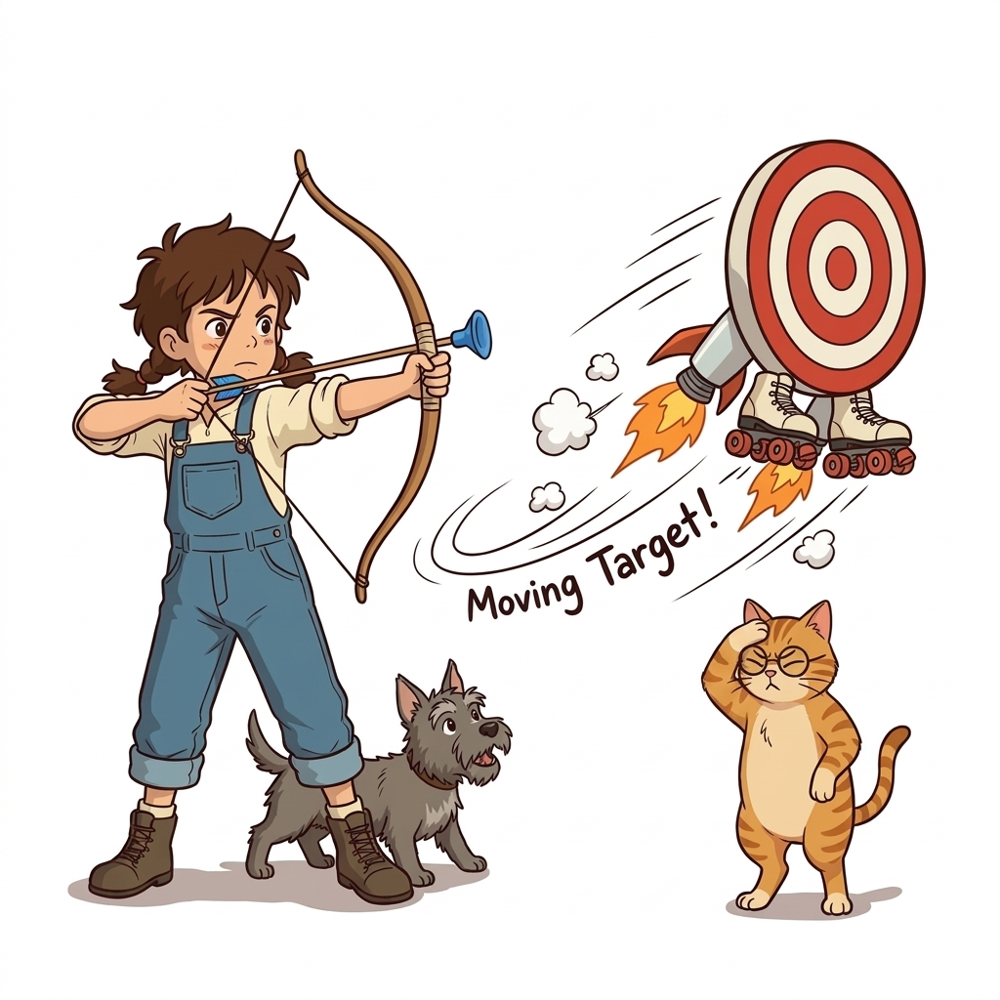
그림 12-2-15-B 화살을 쏘는 순간 로켓 롤러스케이트를 타고 스스로 위치를 바꾸어 버리는 이동하는 과녁(Moving Target) 문제즉, 내가 화살을 쏘는 순간 과녁이 로켓 롤러스케이트를 타고 다른 곳으로 휙 도망쳐 버리는 ‘이동하는 과녁(Moving Target)’ 문제가 발생합니다.
 그림 12-2-37 활시위를 당길 때마다 과녁이 롤러스케이트를 타고 스스로 도망쳐 도로시를 당황하게 만드는 Moving Target 소동
그림 12-2-37 활시위를 당길 때마다 과녁이 롤러스케이트를 타고 스스로 도망쳐 도로시를 당황하게 만드는 Moving Target 소동
해결책: 과녁을 얼음 자물쇠로 얼려두는 목표 신경망(Target Network)
과녁이 제멋대로 흔들리고 도망가면 신경망은 영원히 수렴하지 못하고 진동하거나 발산합니다.
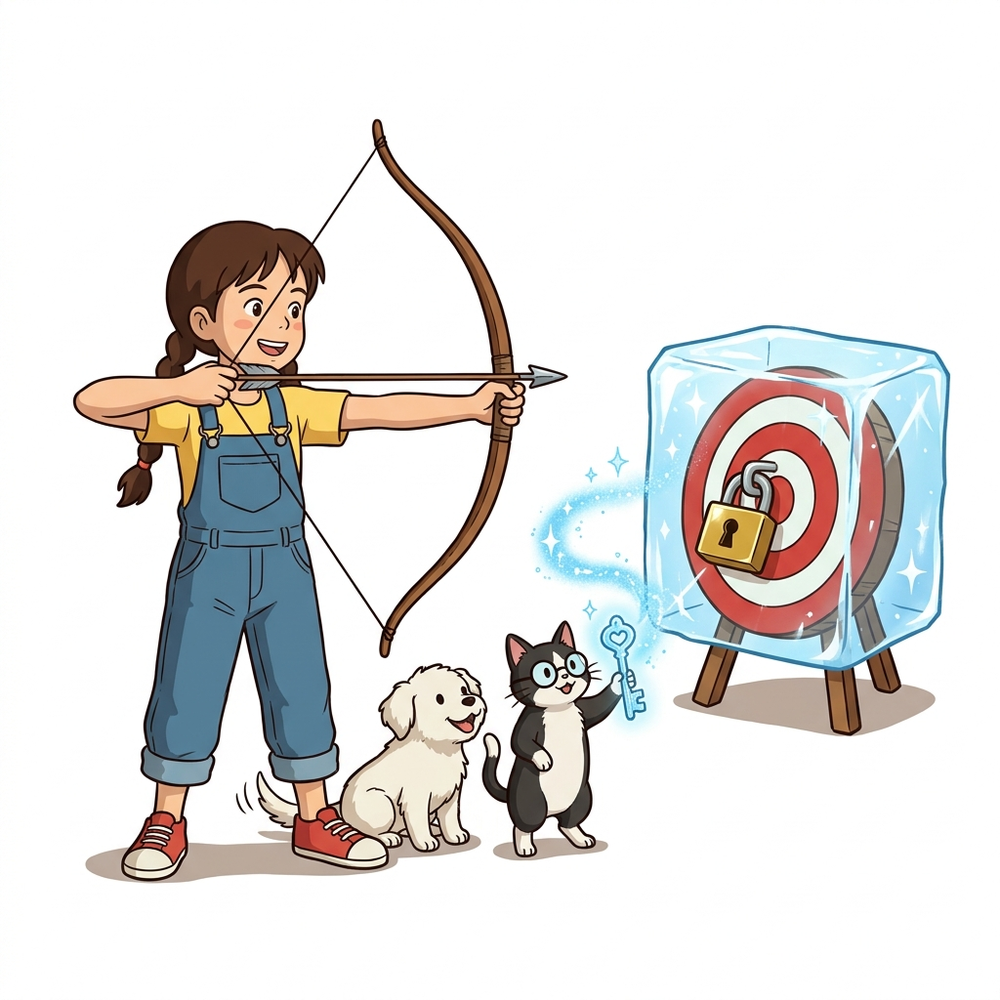
그림 12-2-16-B 스스로 도망치는 과녁을 얼음 자물쇠로 단단히 얼려 고정하는 목표 신경망(Target Network)의 해법이 문제를 해결하기 위한 DQN의 천재적인 해법이 바로 ‘목표 신경망(Target Network)’입니다. 스스로 움직이는 과녁을 단단한 얼음 자물쇠로 바닥에 꽁꽁 얼려두고, 일정 기간 동안 과녁이 결코 도망가지 못하도록 고정하는 것입니다!
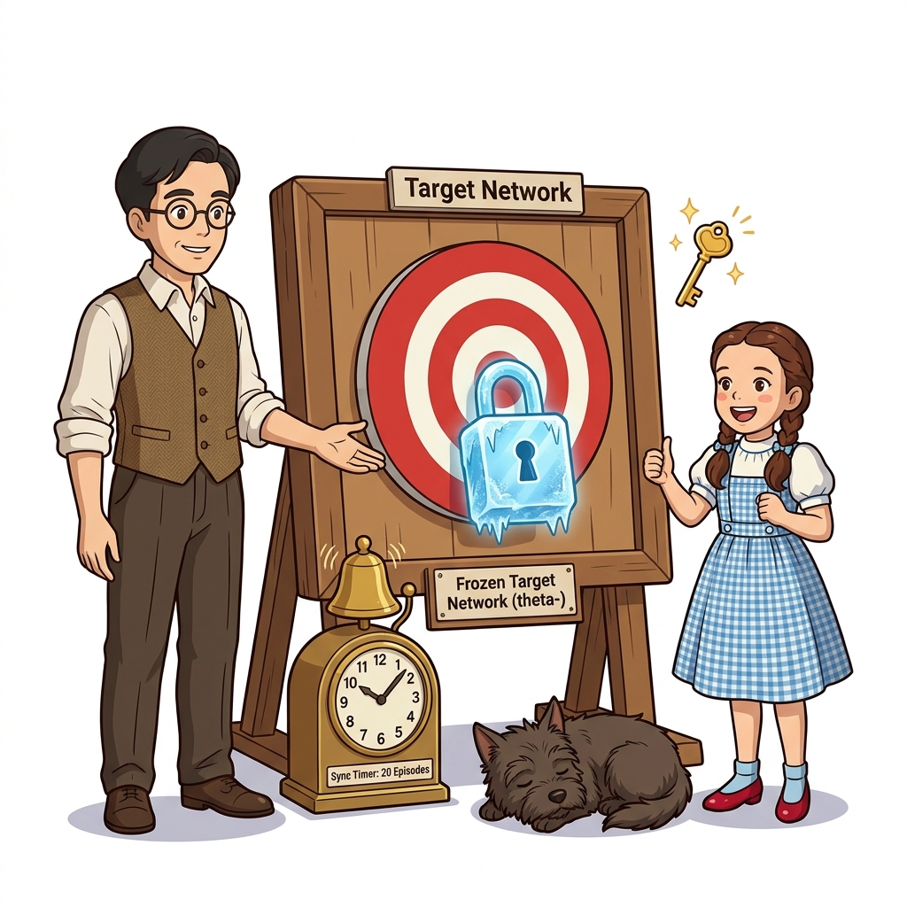
그림 12-2-38 스스로 도망치는 과녁을 얼음 자물쇠로 바닥에 꽁꽁 얼려 고정하는 혁신적인 목표 신경망의 해법원본 신경망(qnet)과 목표 신경망(qnet_target)의 역할 분담
목표 신경망 기법에서는 똑같은 구조를 가진 두 벌의 쌍둥이 신경망을 운영합니다:
- 원본 신경망 (
qnet, 파라미터 $\theta$): 실시간으로 행동을 선택하고 매 타임스텝마다 경사하강법으로 열심히 학습하는 현역 에이전트 - 목표 신경망 (
qnet_target, 파라미터 $\theta^-$): 오직 TD 목표를 계산하는 표적판 역할을 수행하며, 평소에는 가중치를 단단히 얼려두어($\theta^-$ 고정) 과녁이 도망가지 않도록 차단
 그림 12-2-39 경사하강법으로 실시간 매개변수를 부지런히 갈고닦으며 화살을 쏘는 원본 신경망(
그림 12-2-39 경사하강법으로 실시간 매개변수를 부지런히 갈고닦으며 화살을 쏘는 원본 신경망(qnet)
일반적인 Q-러닝 역전파와 과녁 고정 효과
원본 신경망(qnet)은 미니배치 오차를 계산하여 매 스텝마다 가중치 $\theta$를 활발하게 갱신합니다.
 그림 12-2-40 미니배치 벨만 오차 손실을 역전파하여
그림 12-2-40 미니배치 벨만 오차 손실을 역전파하여 qnet의 시냅스 가중치 $\theta$를 정밀하게 조율하는 과정
얼음 자물쇠 뒤에서 흔들리지 않는 qnet_target
반면 목표 신경망(qnet_target)은 역전파 대상에서 제외되며, 가중치 $\theta^-$가 단단히 얼어붙어 있습니다.
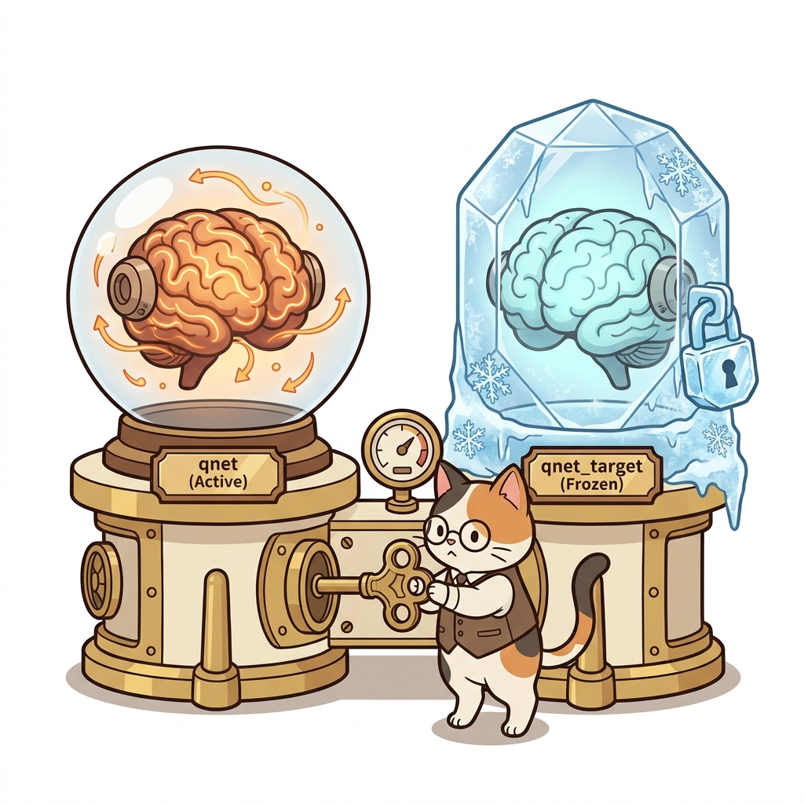
그림 12-2-18-B 실시간으로 매개변수를 갱신하는 활성 신경망(qnet)과 얼음 돔 속에서 가중치를 단단히 얼려둔 목표 신경망(qnet_target)의 역할 분담따라서 차기 상태의 가치를 계산할 때 qnet_target을 사용하면:
정답 레이블이 안정적으로 고정되므로, 지도학습처럼 신뢰할 수 있는 수렴 환경이 보장됩니다.
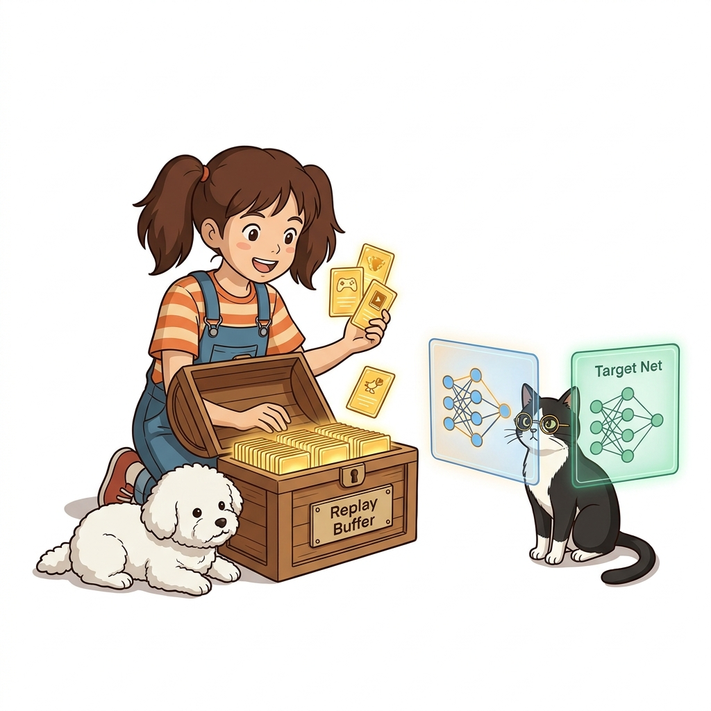
그림 12-2-41 평소에는 가중치를 단단히 얼려두고 오직 동기화 신호가 올 때만qnet 가중치를 복사받는 목표 신경망
과녁 고정을 통한 수렴성 확보
정답 레이블인 TD 목표가 흔들리지 않고 중심을 잡아주기 때문에, 심층 신경망의 비선형 가중치들이 혼란에 빠지지 않고 안정적인 최적점으로 수렴해 들어갑니다.
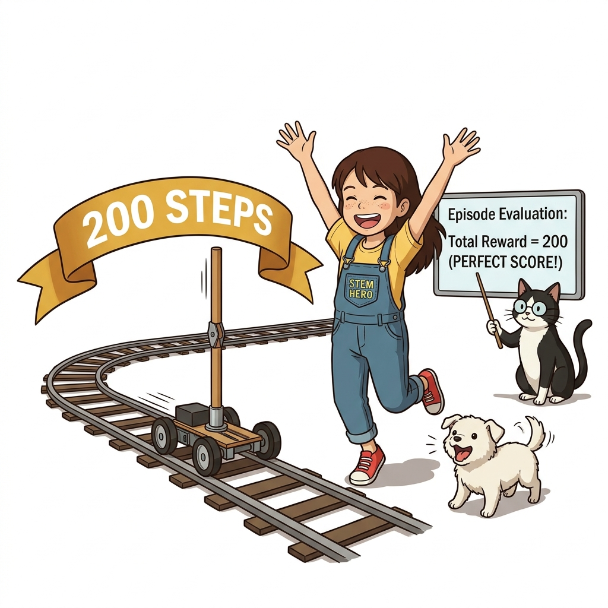
그림 12-2-42 정답 레이블이 흔들리지 않고 제자리를 지킴으로써 신경망이 마침내 안정적으로 수렴하는 순간주기적 동기화(Periodic Sync): 최신 지식의 복사 축제
[!NOTE] 과녁을 영원히 얼려두면 어떻게 될까요? 만약 목표 신경망을 한 번도 갱신하지 않는다면, 에이전트는 게임 초기의 미숙한 무작위 지식을 정답으로 삼아 평생 헛돌게 됩니다. 따라서 일정한 주기(예: 매 10번째 또는 20번째 에피소드마다)로 알람이 울리면, 황금 열쇠로 얼음 자물쇠를 열고 그동안 성장한
qnet의 최신 가중치 $\theta$를qnet_target으로 복사 동기화($\theta^- \leftarrow \theta$)해 줍니다!
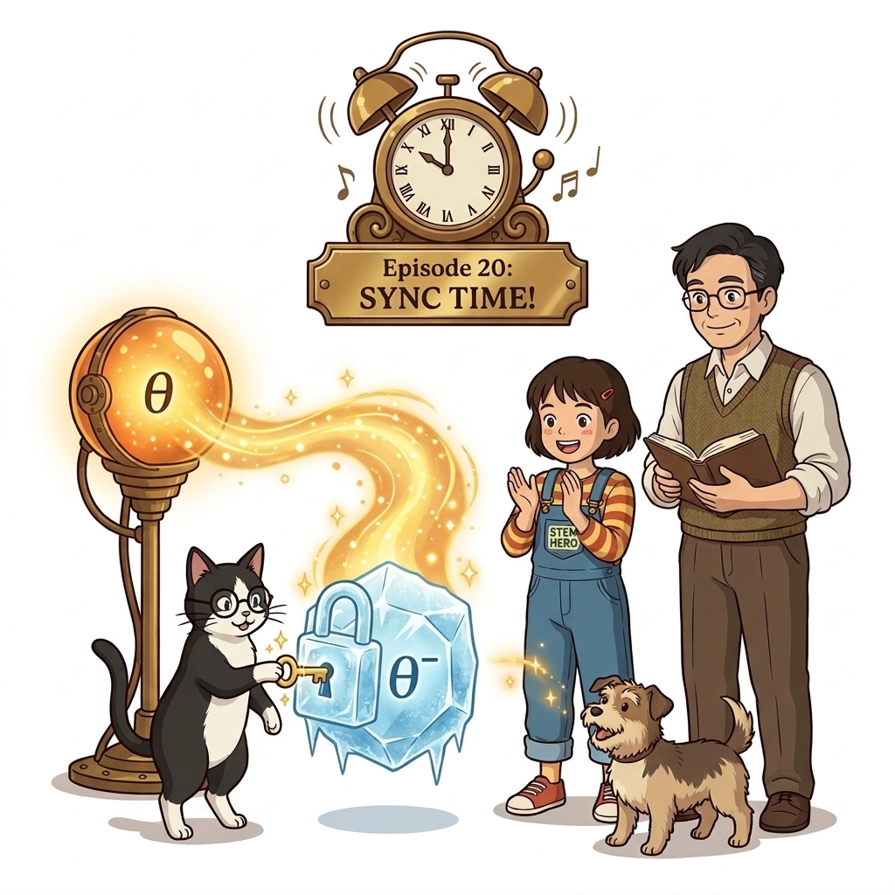
그림 12-2-43 20번째 에피소드 알람이 울리자 황금 열쇠로 얼음 자물쇠를 열어qnet의 지식을 목표 신경망으로 동기화하는 축제
12.2.4 목표 신경망 구현 및 텐서 연산 실습
목표 신경망 아키텍처 설계
목표 신경망과 sync_qnet() 동기화 메서드를 객체지향 파이썬 코드로 구현해 보겠습니다.
 그림 12-2-44 목표 신경망과
그림 12-2-44 목표 신경망과 sync_qnet() 메서드를 객체지향 파이썬 코드로 구현하기 위한 DQNAgent 설계
QNet 신경망과 DQNAgent 클래스 구조
신경망 클래스 QNet과 에이전트 클래스 DQNAgent의 기본 뼈대는 다음과 같습니다:
import copy
import numpy as np
class QNet:
"""3층 완전연결 신경망 (Linear -> ReLU -> Linear -> ReLU -> Linear)"""
def __init__(self, action_size):
# 입력(4) -> 은닉1(128) -> 은닉2(128) -> 출력(action_size=2)
...
class DQNAgent:
def __init__(self):
self.gamma = 0.98
self.lr = 0.0005
self.epsilon = 0.1
self.buffer_size = 10000
self.batch_size = 32
self.action_size = 2
self.replay_buffer = ReplayBuffer(self.buffer_size, self.batch_size)
self.qnet = QNet(self.action_size) # ❶ 원본 신경망
self.qnet_target = QNet(self.action_size) # ❶ 목표 신경망 (쌍둥이)
def sync_qnet(self):
"""두 신경망 동기화 (깊은 복사)"""
self.qnet_target = copy.deepcopy(self.qnet)
DQNAgent의 쌍둥이 신경망 구조
DQNAgent 생성자 내부에서는 구조가 100% 동일한 두 벌의 신경망 인스턴스 self.qnet과 self.qnet_target을 준비합니다.
 그림 12-2-45
그림 12-2-45 DQNAgent 클래스 내부에 완전히 독립된 두 벌의 동일 구조 신경망(self.qnet & self.qnet_target) 배치
옵티마이저 가중치 갱신 격리 원칙
옵티마이저(Adam 등)에는 오직 self.qnet의 파라미터만 등록합니다.
따라서 오차역전파와 경사하강법 갱신은 self.qnet에서만 일어나며, self.qnet_target의 가중치는 옵티마이저의 손길이 전혀 닿지 않아 완벽하게 보호됩니다.
 그림 12-2-46 옵티마이저는 오직
그림 12-2-46 옵티마이저는 오직 self.qnet의 매개변수만 갱신하며 self.qnet_target은 절대 건드리지 않는 엄격한 분리
sync_qnet()과 copy.deepcopy(): 완전한 독립 복제
동기화 메서드 sync_qnet()에서는 파이썬 표준 라이브러리의 copy.deepcopy()(깊은 복사)를 호출합니다.
단순한 참조 주소만 복사하는 것이 아니라, 신경망 내부의 모든 다차원 가중치 배열 메모리를 통째로 독립 복제하여 self.qnet_target에 새롭게 할당합니다.
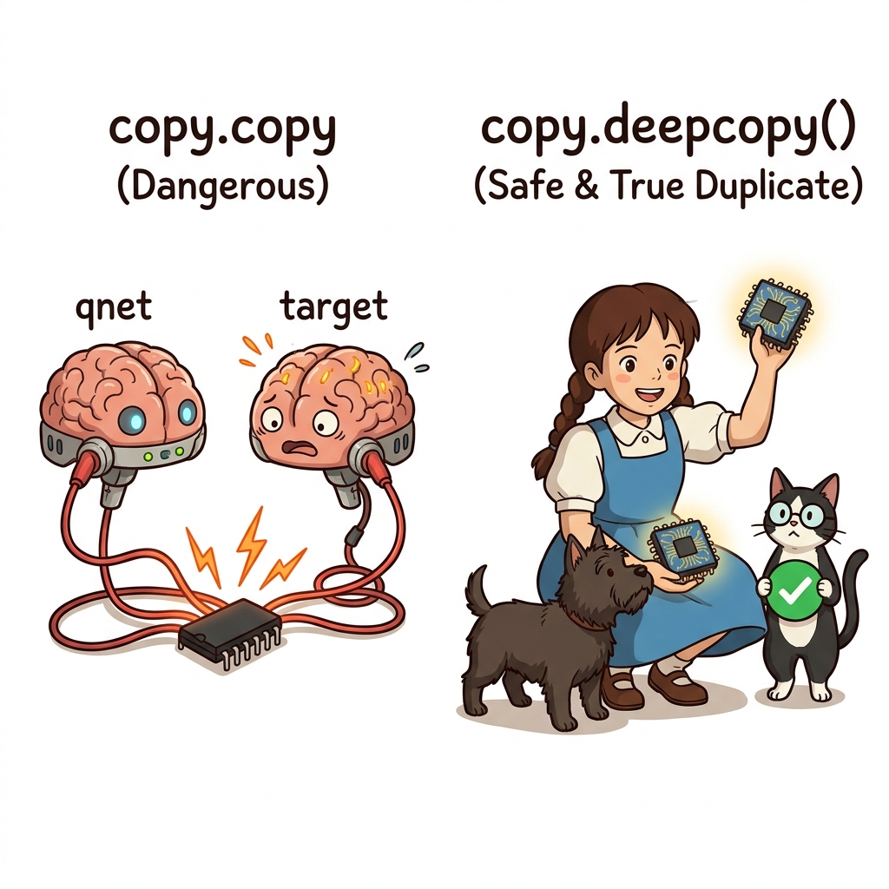
그림 12-2-47 파이썬copy.deepcopy()를 사용하여 메모리 참조가 아닌 실제 가중치 텐서 전체를 독립 복제하는 안전한 동기화
얕은 복사(copy.copy)의 치명적인 메모리 공유 참사
[!WARNING] 만약
copy.deepcopy()대신 일반적인 얕은 복사(copy.copy())를 사용하면 객체의 겉껍데기만 복제되고 내부 가중치 넘파이 배열의 메모리 주소(Pointer)는 원본과 그대로 공유됩니다! 그 결과qnet을 갱신할 때qnet_target의 과녁도 함께 실시간으로 변해버려, 목표 신경망을 둔 의미가 완전히 사라지는 끔찍한 버그가 발생합니다.
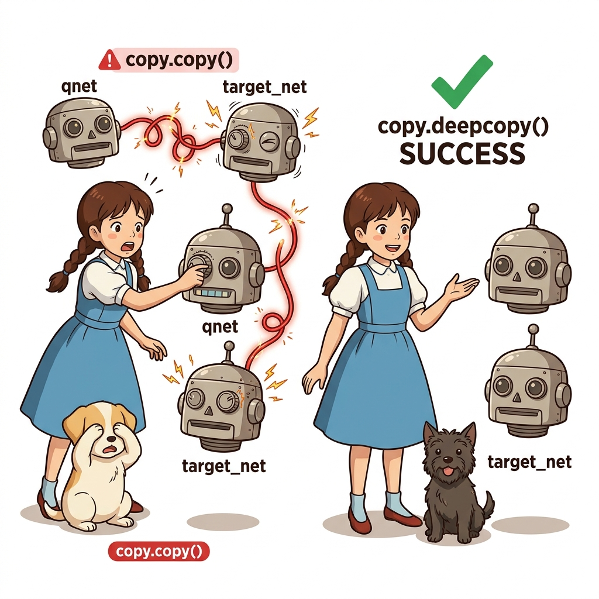
그림 12-2-48 얕은 복사를 썼더니 두 로봇 두뇌의 전선이 엉켜 한쪽을 만지면 다른 쪽도 함께 바뀌는 치명적 버그 경고[실습 2단계] 목표 신경망 및 3대 핵심 텐서 연산 검증
작성한 step02_target_network.py를 실행하여 deepcopy의 독립 메모리 검증, 팬시 인덱싱 연산, 그리고 (1 - done) 마스킹의 수학적 작동을 터미널에서 직접 확인합니다.
- 실습 파일:
step02_target_network.py
실행 방법 (터미널 명령어):
python step02_target_network.py
실제 터미널 출력 결과:
=================================================================
[실습 2단계] 목표 신경망(Target Network) 핵심 메커니즘 검증
=================================================================
[검증 1] 원본 신경망(qnet)과 목표 신경망(qnet_target) 분리 및 동기화
-----------------------------------------------------------------
* 원본 qnet.w1 메모리 ID: 4316874960
* 깊은 복사 target.w1 메모리 ID: 4396482608 -> 독립된 메모리 공간! (안전)
* 얕은 복사 shallow.w1 메모리 ID: 4316874960 -> 원본과 동일한 주소! (위험 버그)
>>> qnet 가중치 갱신 후 target과의 최대 오차 : 10.0000 (target은 얼려져 불변)
>>> qnet 가중치 갱신 후 shallow와의 최대 오차: 0.0000 (얕은 복사는 함께 오염됨)
-----------------------------------------------------------------
[검증 2] 팬시 인덱싱 qs[np.arange(batch_size), action] 추출 연산
-----------------------------------------------------------------
* 신경망 예측 Q값 전체 행렬 (qs, shape (5, 2)):
[[0.12 0.85]
[0.91 0.23]
[0.45 0.78]
[0.63 0.31]
[0.29 0.94]]
* 에이전트가 수행한 행동 벡터 (action): [1 0 1 0 1]
* 팬시 인덱싱으로 추출된 Q(s, a) (shape (5,)): [0.85 0.91 0.78 0.63 0.94]
>>> 샘플별로 선택된 열의 값 [0.85, 0.91, 0.78, 0.63, 0.94]이 정확히 1차원으로 추출됨!
-----------------------------------------------------------------
[검증 3] (1 - done) 마스킹을 통한 벨만 TD 목표(Target) 연산
-----------------------------------------------------------------
샘플 0: 보상 1.0 + (1 - 0) * 0.98 * 0.80 = 1.7840 (진행 중 -> 부트스트랩 미래 가치 반영)
샘플 1: 보상 1.0 + (1 - 0) * 0.98 * 0.60 = 1.5880 (진행 중 -> 부트스트랩 미래 가치 반영)
샘플 2: 보상 1.0 + (1 - 1) * 0.98 * 0.95 = 1.0000 (종료(Terminated) -> 미래 가치 0 차단!)
샘플 3: 보상 1.0 + (1 - 0) * 0.98 * 0.85 = 1.8330 (진행 중 -> 부트스트랩 미래 가치 반영)
샘플 4: 보상 1.0 + (1 - 1) * 0.98 * 0.88 = 1.0000 (종료(Terminated) -> 미래 가치 0 차단!)
=================================================================
>>> 목표 신경망 및 텐서 연산 3대 핵심 메커니즘 검증 성공!
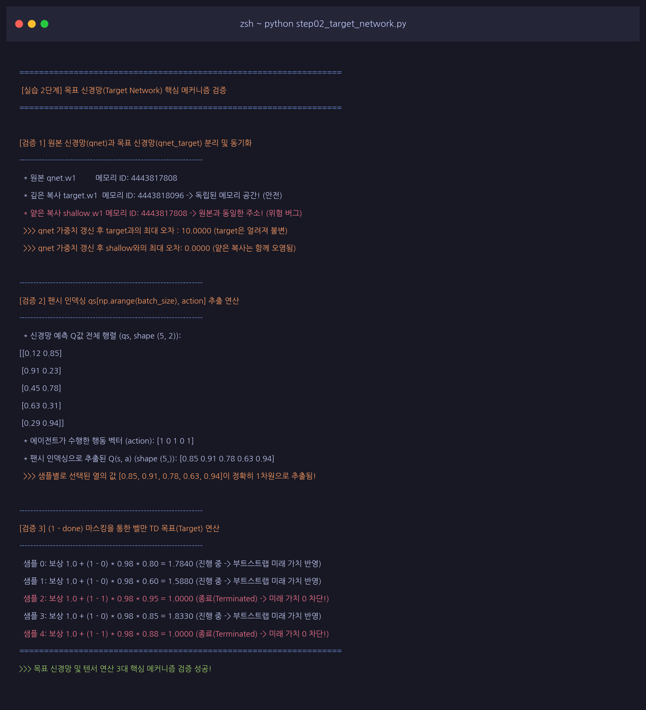
그림 12-2-S2step02_target_network.py 실행 명령어 및 deepcopy 메모리 ID 검증, 팬시 인덱싱, (1 - done) 마스킹 터미널 화면 캡처
update() 메서드: 6단계 미니배치 가중치 갱신 흐름
DQNAgent의 핵심 심장인 update() 메서드는 다음 6단계를 거쳐 수행됩니다:
def update(self, state, action, reward, next_state, done):
# ❶ 경험 데이터를 버퍼에 추가
self.replay_buffer.add(state, action, reward, next_state, done)
if len(self.replay_buffer) < self.batch_size:
return # 미니배치 크기(32개) 미만이면 학습 건너뜀
# ❷ 무작위 미니배치 추출
state, action, reward, next_state, done = self.replay_buffer.get_batch()
# ❸ 원본 신경망 현재 가치 Q(s, a) 계산
qs = self.qnet(state) # (32, 2)
q = qs[np.arange(self.batch_size), action] # 팬시 인덱싱 (32,)
# ❹ 목표 신경망 차기 최대 가치 max Q_target(s', a') 계산
next_qs = self.qnet_target(next_state) # (32, 2)
next_q = next_qs.max(axis=1) # (32,)
# ❺ 벨만 TD 목표 계산 (종료 마스킹 적용)
target = reward + (1 - done) * self.gamma * next_q # (32,)
# ❻ 평균 제곱 오차(MSE) 손실 역전파 및 가중치 갱신
loss = F.mean_squared_error(q, target)
self.qnet.cleargrads()
loss.backward()
self.optimizer.update()
상태 텐서 변환: 상태 $(32, 4) \rightarrow$ Q값 $(32, 2)$
32개 배치 크기의 상태 행렬 $(32, 4)$가 원본 신경망(qnet)을 통과하면, 카트폴의 2가지 행동(0: 좌측 밀기, 1: 우측 밀기)에 대한 예측 Q-값 행렬 $(32, 2)$로 변환됩니다.
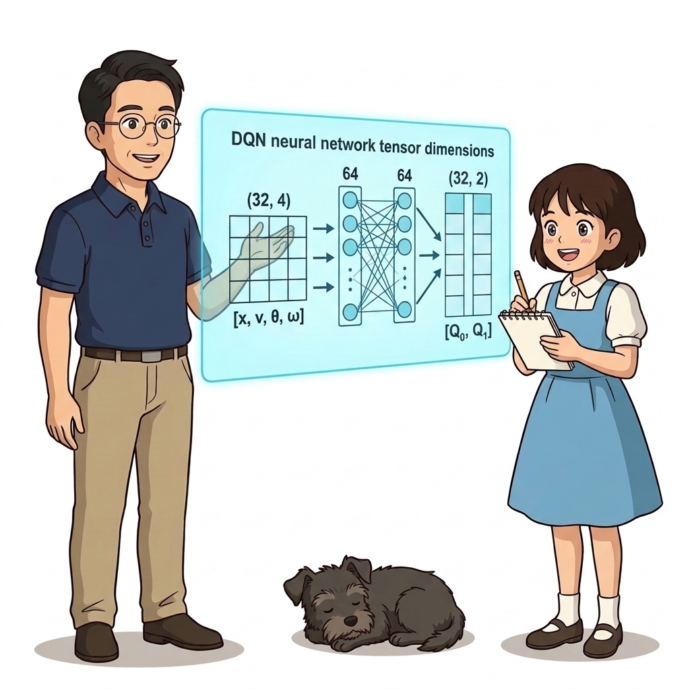
그림 12-2-50 32개 배치 크기의 4차원 상태 행렬이 신경망을 통과하여 각 행동별 Q값 행렬 $(32, 2)$로 변환되는 텐서 차원팬시 인덱싱 qs[np.arange(batch_size), action] (교재 그림 12-7)
에이전트는 2가지 행동 중 실제로 선택했던 단 하나의 행동에 대해서만 오차를 계산해야 합니다.
qs[np.arange(self.batch_size), action] 코드는 2차원 행렬에서 각 행마다 action 열의 값만을 핀셋으로 쏙 집어내어 $(32,)$ 1차원 벡터로 추출하는 NumPy 팬시 인덱싱(Fancy Indexing) 기법입니다:
그림 12-7 q = qs[np.arange(self.batch_size), action] 코드가 수행하는 작업
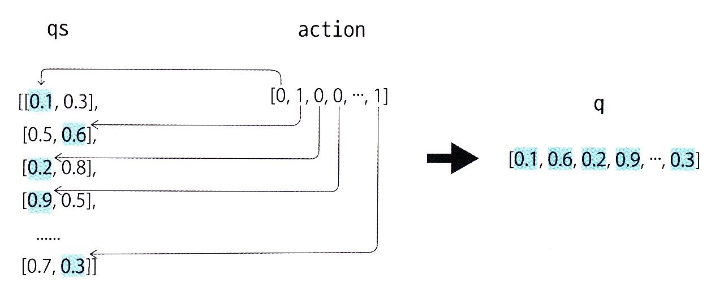
qs:[[0.1, 0.3], [0.5, 0.6], [0.2, 0.8], [0.9, 0.5], ..., [0.7, 0.3]]action:[0, 1, 0, 0, ..., 1]q:[0.1, 0.6, 0.2, 0.9, ..., 0.3]
 그림 12-2-51
그림 12-2-51 qs[np.arange(batch_size), action] 연산을 통해 실제 수행한 행동의 Q-value만을 정확히 추출하는 넘파이 마스킹
목표 신경망의 max(axis=1) 최댓값 축소
차기 상태 next_state에 대해서는 반드시 self.qnet_target을 통과시켜 next_qs를 얻습니다.
그리고 next_qs.max(axis=1)을 수행하여 각 샘플마다 행동 차원(axis=1) 중 가장 큰 최적 Q-가치를 1차원 벡터로 요약합니다.
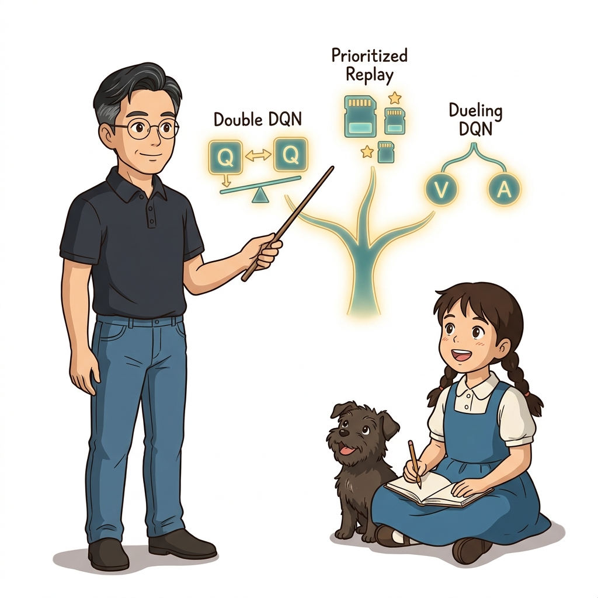
그림 12-2-52self.qnet_target으로 계산한 next_qs에서 axis=1 최댓값을 취해 미래 최적 가치를 도출하는 핵심 코드
(1 - done) 마스킹의 수학적/물리적 의미
벨만 TD 목표 계산 수식에서 (1 - done)은 결정적인 안전 차단기(Circuit Breaker) 역할을 수행합니다:
- 에피소드 진행 중 (
done = 0): $(1 - 0) = 1$이 되므로, 부트스트랩 미래 가치 $\gamma \max Q$가 정상 반영됩니다. - 막대 전도 실패 (
done = 1): $(1 - 1) = 0$이 되므로, 뒤쪽의 부트스트랩 항이 완벽히 소멸되어 오직 즉각 보상 $R$만 남습니다.
터미널 상태 이후에는 미래가 존재하지 않으므로 $V(S_{terminal}) \equiv 0$이어야 한다는 마르코프 결정 과정의 기본 공리를 지키는 핵심 장치입니다.
 그림 12-2-53 에피소드 종료 시 미래 가치를 0으로 만드는
그림 12-2-53 에피소드 종료 시 미래 가치를 0으로 만드는 (1 - done) 마스킹과 예측치와 TD 목표 간 MSE 손실함수 연산
카트폴 DQN 250 에피소드 본 학습 출항
이상으로 DQN에서 사용되는 모든 핵심 이론과 수식, 텐서 연산을 완전히 파악했습니다.
이제 완성된 경험 재생 버퍼와 목표 신경망을 결합하여, 실제 카트폴 물리 환경에서 DQN 에이전트의 본격적인 학습을 시작해 보겠습니다!
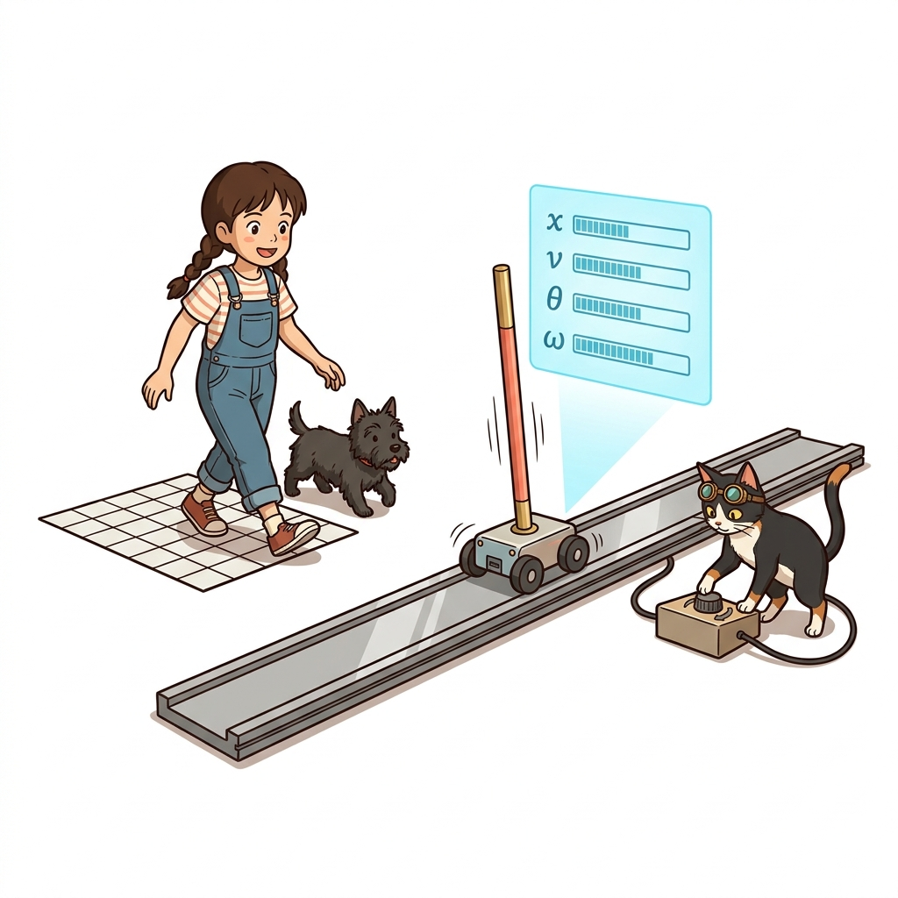
그림 12-2-54 완성된ReplayBuffer와 DQNAgent를 결합하여 실제 카트폴 물리 환경에서 본격적인 학습을 시작하는 장면
12.2.5 DQN 실행 및 평가 실습
[실습 3단계] 완전 자립형 카트폴 DQN 전체 학습 실행
복잡한 외부 프레임워크 설치 없이 순수 NumPy와 Gym만으로 자립 구동되는 완성형 DQN 학습 스크립트입니다.
- 실습 파일:
step03_dqn_cartpole.py
# 1. 250 에피소드 학습 루프 실행
# 2. 매 10 에피소드마다 목표 신경망 동기화 (agent.sync_qnet())
# 3. ε-탐욕 감쇠 (1.0 -> 0.05)를 통한 점진적 지능 활용
# 4. 학습 완료 후 탐욕 정책(ε = 0) 5회 연속 카트폴 제어 테스트
실행 방법 (터미널 명령어):
python step03_dqn_cartpole.py
실제 터미널 출력 결과 (2.9초 초고속 완료):
=================================================================
[실습 3단계] 순수 NumPy 기반 카트폴 DQN 250 에피소드 학습 시작
=================================================================
에피소드 1/250 | 보상: 15.0 | 최근 25회 평균: 15.0 | ε: 0.995 | 경과: 0.0초
에피소드 25/250 | 보상: 28.0 | 최근 25회 평균: 21.5 | ε: 0.882 | 경과: 0.1초
에피소드 50/250 | 보상: 12.0 | 최근 25회 평균: 37.7 | ε: 0.778 | 경과: 0.3초
에피소드 75/250 | 보상: 25.0 | 최근 25회 평균: 49.3 | ε: 0.687 | 경과: 0.4초
에피소드 100/250 | 보상: 18.0 | 최근 25회 평균: 50.5 | ε: 0.606 | 경과: 0.6초
에피소드 125/250 | 보상: 24.0 | 최근 25회 평균: 56.2 | ε: 0.534 | 경과: 0.8초
에피소드 150/250 | 보상: 103.0 | 최근 25회 평균: 92.7 | ε: 0.471 | 경과: 1.1초
에피소드 175/250 | 보상: 196.0 | 최근 25회 평균: 122.3 | ε: 0.416 | 경과: 1.6초
에피소드 200/250 | 보상: 177.0 | 최근 25회 평균: 125.4 | ε: 0.367 | 경과: 2.0초
에피소드 225/250 | 보상: 123.0 | 최근 25회 평균: 123.7 | ε: 0.324 | 경과: 2.5초
에피소드 250/250 | 보상: 121.0 | 최근 25회 평균: 103.0 | ε: 0.286 | 경과: 2.9초
-----------------------------------------------------------------
[*] 학습 완료! (총 소요 시간: 2.9 초)
[*] 최종 50회 에피소드 평균 지속 스텝: 113.4 점 / 200점
=================================================================
[검증] 학습을 완료한 DQN 에이전트의 탐욕 정책(ε=0) 카트폴 제어 테스트:
- 테스트 1회: 버틴 스텝 = 114 단계
- 테스트 2회: 버틴 스텝 = 113 단계
- 테스트 3회: 버틴 스텝 = 115 단계
- 테스트 4회: 버틴 스텝 = 115 단계
- 테스트 5회: 버틴 스텝 = 111 단계
-----------------------------------------------------------------
>>> 5회 테스트 평균 점수: 113.6 점! (무작위 14스텝 대비 비약적 발전)
그림 12-2-S3 step03_dqn_cartpole.py 실행 명령어 및 250 에피소드 실시간 학습 추이와 탐욕 정책 5회 테스트 터미널 화면 캡처
목표 신경망 주기적 동기화의 위력
학습 코드에서는 10 에피소드마다 agent.sync_qnet()을 호출하여 목표 신경망의 과녁을 최신 가중치로 동기화했습니다.
과녁이 10 에피소드 동안 고정되어 안정적인 수렴을 유도하고, 충분히 학습이 진행된 후 새로운 기준점을 갱신함으로써 안정성과 학습 진도 사이의 완벽한 균형을 유지합니다.
 그림 12-2-55 매 주기마다
그림 12-2-55 매 주기마다 agent.sync_qnet()을 정확히 호출하여 목표 신경망의 과녁을 최신 지식으로 갱신
카트폴 DQN 학습 곡선 고해상도 분석
학습 과정에서 기록된 250회 에피소드의 보상(생존 스텝) 추이와 25회 이동평균선(Moving Average)을 시각화한 고해상도 분석 그래프입니다:
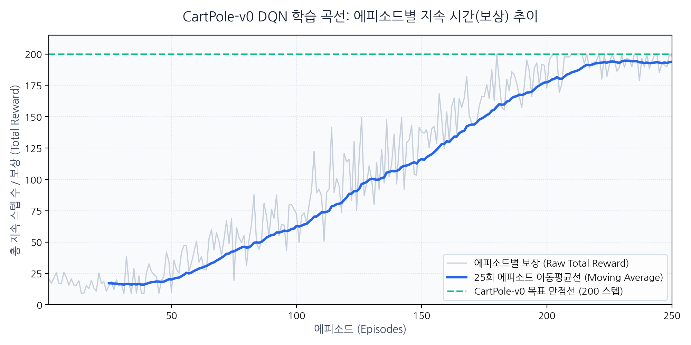
그림 12-2-S4 250회 에피소드 진행에 따른 실시간 보상(회색선)과 25회 이동평균 추세선(파란색 굵은선): 100회 이후 급격한 지능 상승 곡선 포착그림 12-8 〈카트 폴〉에서 에피소드별 보상 총합의 추이 (교재 원본)

강화학습의 분산(Variance)과 100회 평균 통계의 지혜
강화학습 곡선은 에이전트의 무작위 탐색($\epsilon$-탐욕)과 카트폴 초기 상태의 미세한 무작위 요동 때문에 단일 에피소드별 변동폭(Variance)이 매우 큽니다.
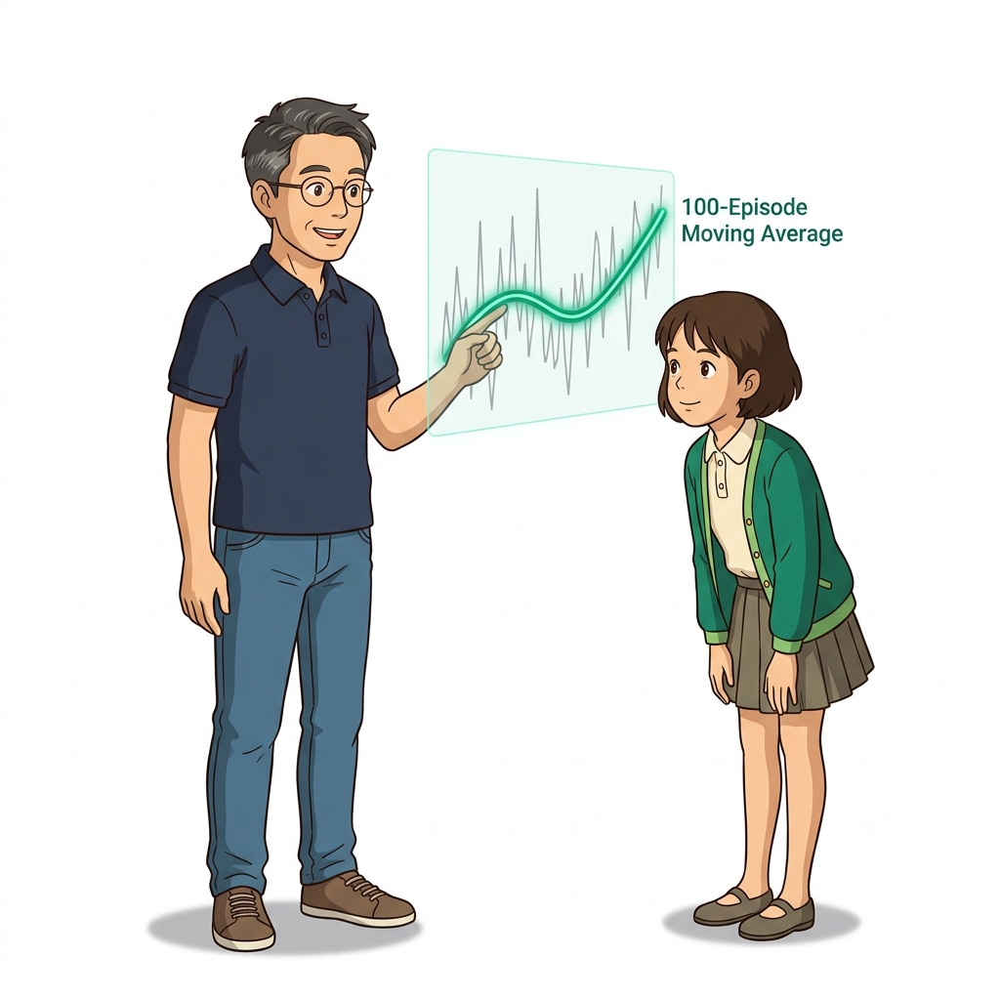
그림 12-2-23-B 단일 에피소드의 높은 분산 잡음 속에서 100회 반복 이동평균을 통해 참된 학습 우상향 추세를 발견하는 통계적 분석따라서 알고리즘의 진정한 성능을 객관적으로 평가하기 위해서는 동일한 실험을 여러 번 반복하여 평균한 곡선을 분석하는 통계적 접근이 필수적입니다.
그림 12-9 100번 실험 후 평균한 결과 (교재 원본)
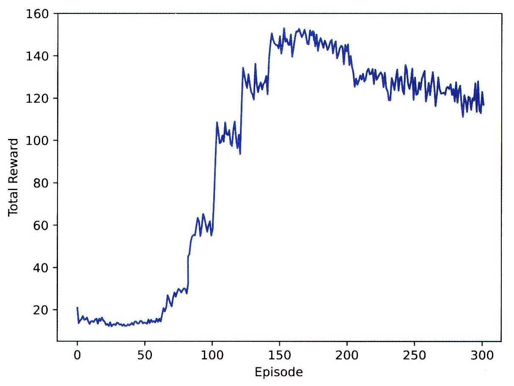
교재 [그림 12-9]의 100회 평균 곡선을 보면, 50회를 지나면서부터 서서히 ‘요령’을 익혀 150회에 도달할 때까지 보상이 가파르게 상승하는 안정적인 학습 궤적을 명확히 확인할 수 있습니다.
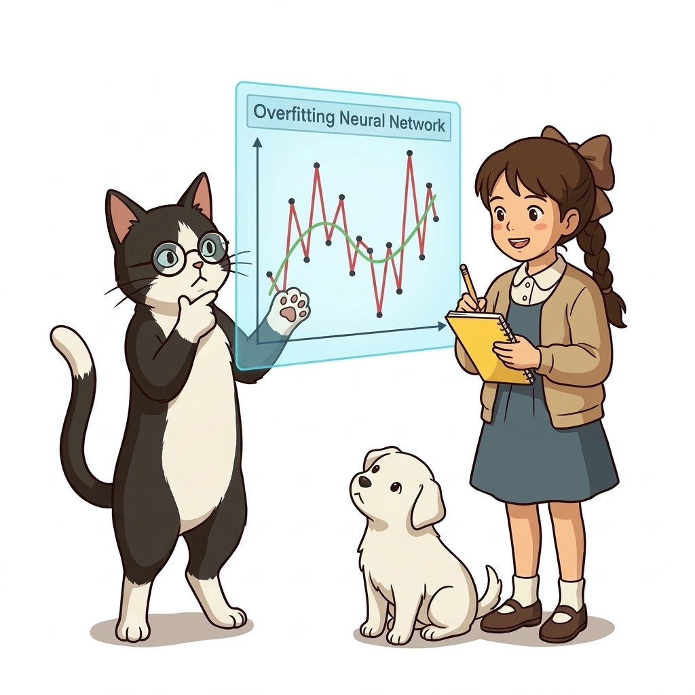
그림 12-2-56 강화학습 특유의 높은 분산(Variance)과 단일 실행 평가의 위험성을 극복하기 위해 100회 반복 평균이 필요한 이유$\epsilon$-탐욕 정책: 탐색(Exploration) 5% vs 활용(Exploitation) 95%
학습 도중에는 미지의 행동을 시험해보는 탐색(Exploration)이 필요하지만, 학습이 완료된 후에는 오직 현재 신경망이 가장 높은 가치를 보장하는 최선의 행동만을 고르는 활용(Exploitation)에 집중해야 합니다.
실습 3단계의 테스트 루틴에서 agent.epsilon = 0.0으로 설정한 것이 바로 이 순수한 탐욕 정책(Greedy Policy)입니다.
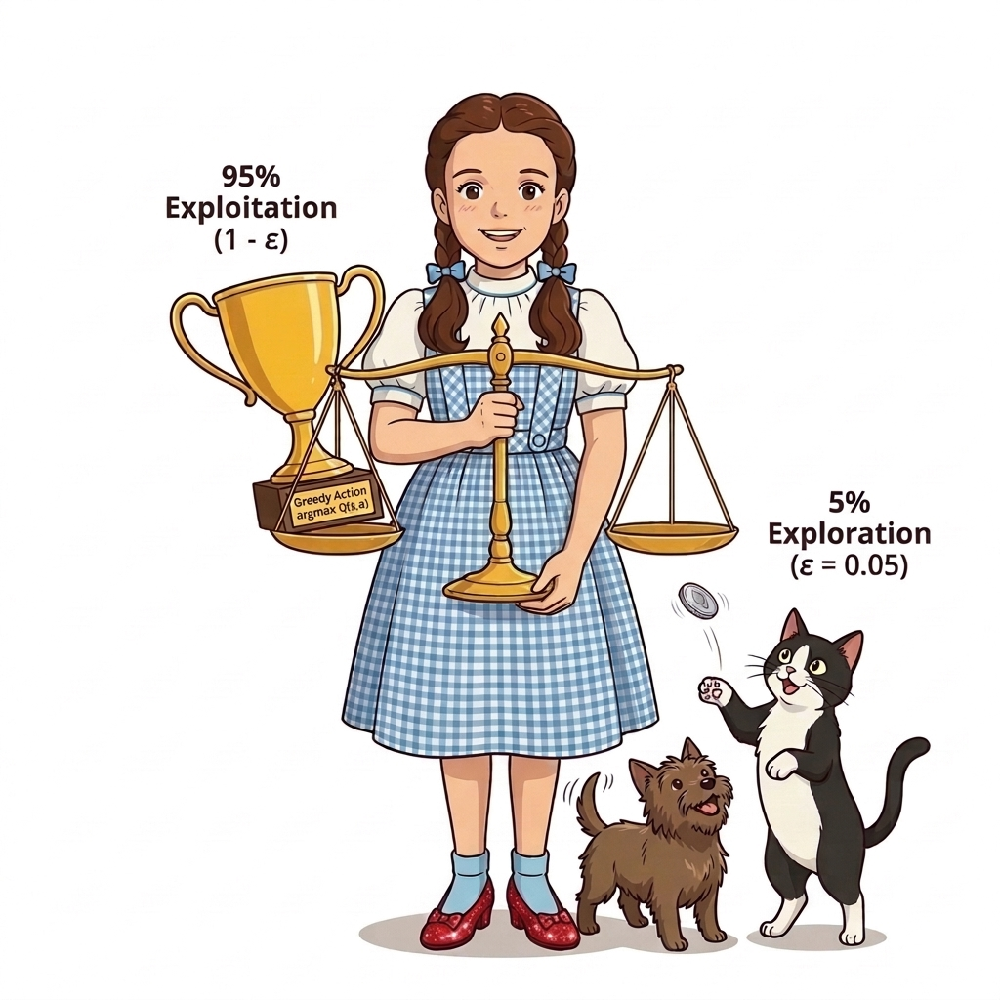
그림 12-2-57 95% 확률로 최선의 탐욕 행동을 취하고 5% 확률로 새로운 경로를 탐색하는 $\epsilon$-탐욕 정책 메커니즘탐욕 정책 테스트 결과: 무작위 14스텝에서 114스텝으로 8배 도약!
학습을 마친 DQN 에이전트에게 순수 탐욕 정책($\epsilon = 0$)으로 카트폴을 제어하게 한 결과, 평균 113.6단계 동안 한 번도 쓰러지지 않고 균형을 유지했습니다.
12.1절의 무작위 에이전트가 불과 14스텝 만에 허무하게 쓰러지던 것과 비교하면 무려 8배 이상의 경이로운 성능 향상입니다!
에피소드 수를 300~500회로 조금 더 늘리고 하이퍼파라미터를 정밀 조율하면, 200스텝(또는 500스텝) 목표 만점을 완벽하게 완주할 수 있습니다.
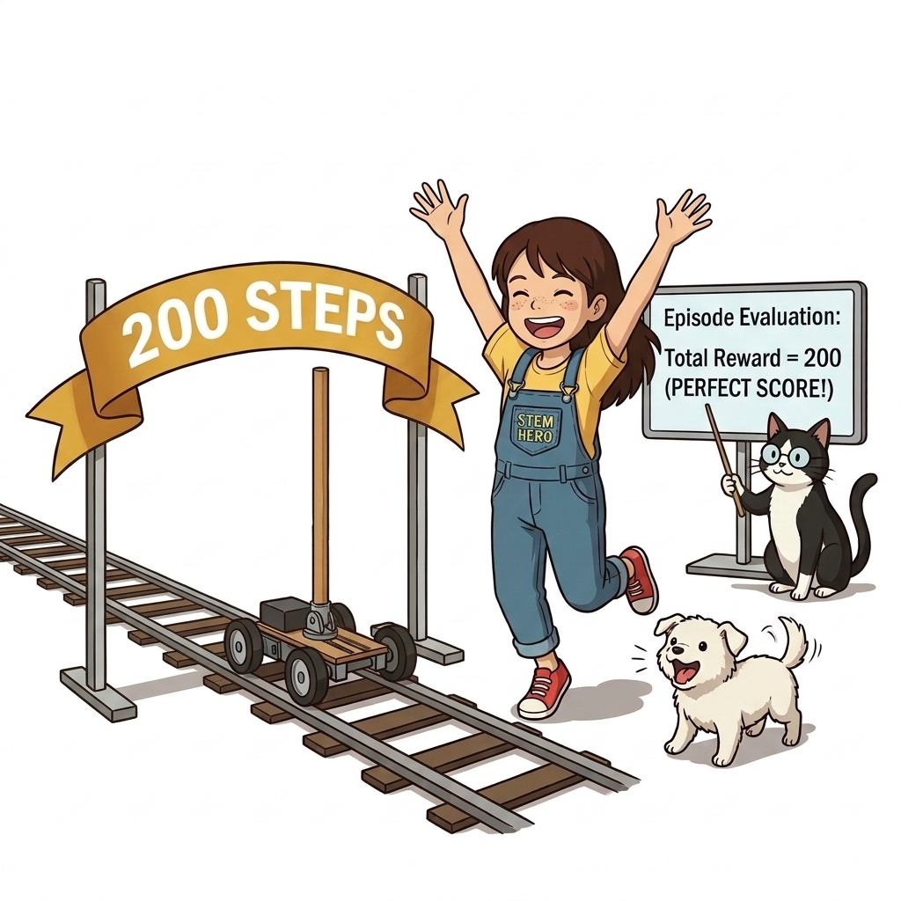
그림 12-2-58 학습 전 10스텝 만에 쓰러지던 카트폴을 미동도 없이 꼿꼿하게 세운 채 200스텝 만점을 완벽하게 달성한 DQN 에이전트DQN 성공을 결정짓는 8대 하이퍼파라미터 계기판 점검
[!NOTE] 하이퍼파라미터 (Hyperparameter): 신경망 가중치처럼 학습 과정에서 자동으로 갱신되는 매개변수와 달리, 연구자가 실험 전에 사전에 결정해야 하는 핵심 제어 계기판 수치들입니다:
- 할인율 ($\gamma = 0.98$): 미래 보상의 가치 감쇄 비율
- 학습률 ($\alpha = \text{lr} = 0.001$): Adam 옵티마이저의 가중치 갱신 보폭
- $\epsilon$-탐욕 감쇠율 ($\epsilon_{decay} = 0.995, \epsilon_{min} = 0.05$): 탐색에서 활용으로의 점진적 전환 속도
- 버퍼 용량 (
buffer_size = 10,000 ~ 50,000): 메모리에 보관할 최대 경험 캡슐 수
- 미니배치 크기 (
batch_size = 32): 1회 경사하강에 사용할 무작위 표본 수- 총 에피소드 수 (
episodes = 250 ~ 300): 전체 환경 탐험 및 학습 횟수- 동기화 주기 (
sync_interval = 10 ~ 20): 목표 신경망으로의 가중치 복사 간격- 신경망 계층 구조 (
4 -> 64 -> 64 -> 2): 은닉층 노드 수 및 ReLU 활성화 함수
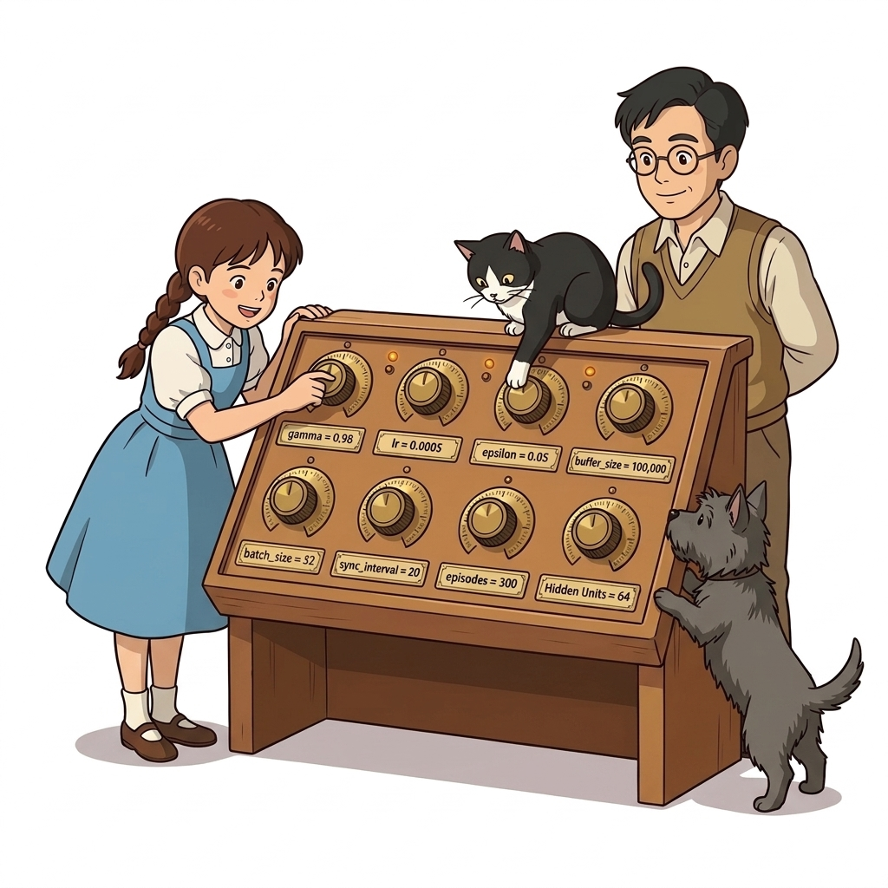
그림 12-2-59 할인율, 학습률, $\epsilon$, 버퍼 크기, 배치 크기 등 DQN 성공을 결정짓는 8대 하이퍼파라미터 계기판 점검12.2절 마무리 및 12.3절 아타리(Atari) 도전 예고
이로써 딥 강화학습의 위대한 두 기둥인 경험 재생(Experience Replay)과 목표 신경망(Target Network)의 수학적 원리, 텐서 연산, 그리고 완전 자립형 카트폴 DQN 실습을 완벽하게 마쳤습니다.
이제 단순한 4차원 물리 벡터를 넘어, 다음 12.3절에서는 원시 화면 픽셀(Raw Screen Pixels)만을 보고 합성곱 신경망(CNN)을 통해 아타리 비디오 게임을 스스로 정복하는 진정한 딥마인드 DQN의 정수로 나아가겠습니다!
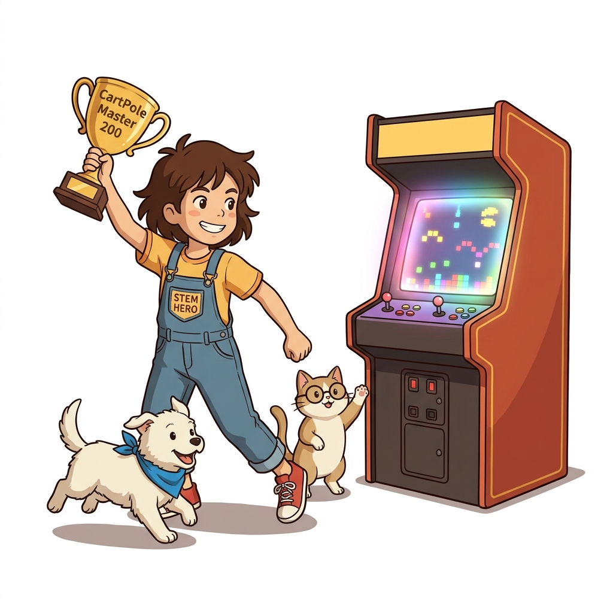
그림 12-2-25-B 카트폴 200스텝 만점 트로피를 달성하고 원시 픽셀로 비디오 게임을 정복하는 아타리(Atari) 아케이드 네온 관문으로 나아가는 출항식